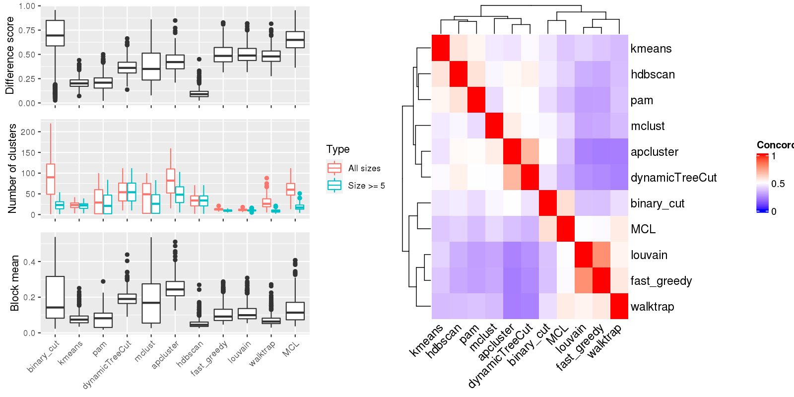

Figure 1.Compare clustering results. Left panel: The difference score, number of clusters and the block mean of different clusterings. Right panel: Concordance between clustering methods. The concordance measures how similar two clusterings are. The definition of the concordance score can be found here.

Table 1.Number of clusters identified by each clustering method. Numbers in the table indicate the number of clusters. The numbers inside the parentheses are the number of clusters with size >= 5.
| ID | binary_cut | kmeans | pam | dynamicTreeCut | mclust | apcluster | hdbscan | fast_greedy | louvain | walktrap | MCL | Details |
|---|---|---|---|---|---|---|---|---|---|---|---|---|
| E-GEOD-101794_g2_g1 | 30(23) | 29(26) | 70(55) | 77(77) | 76(54) | 114(70) | 45(45) | 12(11) | 10(10) | 35(14) | 62(18) | view |
| E-GEOD-10311_A-AFFY-44_g6_g4 | 86(21) | 32(29) | 67(55) | 71(71) | 3(3) | 111(67) | 45(45) | 13(9) | 9(8) | 27(7) | 56(13) | view |
| E-GEOD-104288_g2_g1 | 42(9) | 13(13) | 2(2) | 21(21) | 32(15) | 24(19) | 13(13) | 7(6) | 7(6) | 11(3) | 24(6) | view |
| E-GEOD-10718_A-AFFY-44_g4_g3 | 75(20) | 13(13) | 2(2) | 37(37) | 74(30) | 78(38) | 25(25) | 14(10) | 12(10) | 22(6) | 54(15) | view |
| E-GEOD-10718_A-AFFY-44_g5_g6 | 88(29) | 13(13) | 2(2) | 51(51) | 61(45) | 82(47) | 33(33) | 12(8) | 8(8) | 18(6) | 56(19) | view |
| E-GEOD-10797_A-AFFY-37_g1_g3 | 126(36) | 28(28) | 60(52) | 68(68) | 66(52) | 78(58) | 45(45) | 13(11) | 11(11) | 28(16) | 69(27) | view |
| E-GEOD-10927_A-AFFY-44_g2_g3 | 77(20) | 5(5) | 2(2) | 30(30) | 36(22) | 66(26) | 17(17) | 11(9) | 11(9) | 25(6) | 56(15) | view |
| E-GEOD-11285_A-AFFY-44_g1_g2 | 52(15) | 19(18) | 24(16) | 24(24) | 30(20) | 42(20) | 15(15) | 14(9) | 15(10) | 19(7) | 32(10) | view |
| E-GEOD-11285_A-AFFY-44_g3_g4 | 155(31) | 35(33) | 86(68) | 96(96) | 88(66) | 141(79) | 51(51) | 12(10) | 12(11) | 52(17) | 85(19) | view |
| E-GEOD-11324_A-AFFY-44_g1_g4 | 115(28) | 20(19) | 45(39) | 50(50) | 90(43) | 77(44) | 32(32) | 14(10) | 13(12) | 37(16) | 66(20) | view |
| E-GEOD-11352_A-AFFY-44_g1_g6 | 71(12) | 11(10) | 2(2) | 22(22) | 46(13) | 47(17) | 15(15) | 13(10) | 9(9) | 22(7) | 49(11) | view |
| E-GEOD-11352_A-AFFY-44_g3_g4 | 41(8) | 9(8) | 2(2) | 13(13) | 23(11) | 30(9) | 2(2) | 15(5) | 12(6) | 10(3) | 37(7) | view |
| E-GEOD-11428_A-AFFY-44_g3_g1 | 133(39) | 25(24) | 2(2) | 69(69) | 85(53) | 91(62) | 41(41) | 12(8) | 11(10) | 35(13) | 73(27) | view |
| E-GEOD-11783_A-AFFY-44_g1_g2 | 144(29) | 33(32) | 82(67) | 88(88) | 97(66) | 125(80) | 50(50) | 8(7) | 9(9) | 38(10) | 64(16) | view |
| E-GEOD-11791_A-AFFY-44_g3_g4 | 65(19) | 21(19) | 22(19) | 31(31) | 45(21) | 46(23) | 17(17) | 15(11) | 13(11) | 23(12) | 51(20) | view |
| E-GEOD-11839_A-AFFY-44_g2_g1 | 19(10) | 8(7) | 14(10) | 15(15) | 2(2) | 30(10) | 9(9) | 15(10) | 14(12) | 15(7) | 30(9) | view |
| E-GEOD-11886_A-AFFY-44_g3_g1 | 167(42) | 23(23) | 2(2) | 101(101) | 100(79) | 126(95) | 54(54) | 9(7) | 11(10) | 27(11) | 83(25) | view |
| E-GEOD-11919_A-AFFY-44_g1_g2 | 130(28) | 29(27) | 2(2) | 60(60) | 99(48) | 83(56) | 35(35) | 10(8) | 9(8) | 20(9) | 59(18) | view |
| E-GEOD-11919_A-AFFY-44_g1_g3 | 127(33) | 22(21) | 2(2) | 62(62) | 2(2) | 86(60) | 44(44) | 13(7) | 12(9) | 17(5) | 61(14) | view |
| E-GEOD-12265_A-AFFY-44_g1_g4 | 4(4) | 27(27) | 61(47) | 68(68) | 100(48) | 94(55) | 37(37) | 10(10) | 11(11) | 44(10) | 54(14) | view |
| E-GEOD-12355_A-AFFY-44_g11_g12 | 171(45) | 28(28) | 78(65) | 80(80) | 97(61) | 97(74) | 51(51) | 12(8) | 11(11) | 47(19) | 79(37) | view |
| E-GEOD-12355_A-AFFY-44_g4_g6 | 66(19) | 13(12) | 2(2) | 33(33) | 66(34) | 46(35) | 22(22) | 11(8) | 8(8) | 20(8) | 45(15) | view |
| E-GEOD-12355_A-AFFY-44_g7_g8 | 147(45) | 25(25) | 2(2) | 78(78) | 87(61) | 95(69) | 48(48) | 13(8) | 10(10) | 34(15) | 81(31) | view |
| E-GEOD-12355_A-AFFY-44_g7_g9 | 107(31) | 17(17) | 2(2) | 49(49) | 80(40) | 62(43) | 33(33) | 11(11) | 11(11) | 23(10) | 56(17) | view |
| E-GEOD-12446_A-AFFY-44_g1_g4 | 28(8) | 10(9) | 2(2) | 14(14) | 24(14) | 19(14) | 12(12) | 7(6) | 8(7) | 5(3) | 13(6) | view |
| E-GEOD-12452_A-AFFY-44_g2_g1 | 66(18) | 12(12) | 2(2) | 32(32) | 32(24) | 37(28) | 23(23) | 11(10) | 12(10) | 39(13) | 49(13) | view |
| E-GEOD-12773_A-AFFY-44_g1_g2 | 128(40) | 26(26) | 2(2) | 81(81) | 73(63) | 108(75) | 45(45) | 11(10) | 11(10) | 17(6) | 68(18) | view |
| E-GEOD-12791_A-AFFY-33_g4_g2 | 153(47) | 31(31) | 2(2) | 101(101) | 2(2) | 125(96) | 67(67) | 13(10) | 15(13) | 25(11) | 99(26) | view |
| E-GEOD-12886_A-AFFY-44_g1_g2 | 88(24) | 20(18) | 37(26) | 39(39) | 59(31) | 70(31) | 24(24) | 16(11) | 14(11) | 18(5) | 49(16) | view |
| E-GEOD-12963_A-AFFY-44_g3_g1 | 92(31) | 27(25) | 50(37) | 52(52) | 49(38) | 61(46) | 31(31) | 10(8) | 10(9) | 23(9) | 58(21) | view |
| E-GEOD-13274_A-AFFY-44_g1_g3 | 104(30) | 32(29) | 60(48) | 67(67) | 99(47) | 106(54) | 37(37) | 14(10) | 12(12) | 67(16) | 79(22) | view |
| E-GEOD-13637_A-AFFY-44_g1_g2 | 210(40) | 38(38) | 2(2) | 101(101) | 99(74) | 150(88) | 54(54) | 11(9) | 8(8) | 69(16) | 99(27) | view |
| E-GEOD-13637_A-AFFY-44_g1_g9 | 194(50) | 24(23) | 96(80) | 101(101) | 100(76) | 145(93) | 57(57) | 12(11) | 11(8) | 64(17) | 111(34) | view |
| E-GEOD-13637_A-AFFY-44_g5_g1 | 1(1) | 36(32) | 60(47) | 67(67) | 2(2) | 100(55) | 41(41) | 13(9) | 11(9) | 30(4) | 68(17) | view |
| E-GEOD-13637_A-AFFY-44_g5_g3 | 171(41) | 27(27) | 2(2) | 95(95) | 100(76) | 123(87) | 58(58) | 10(8) | 13(12) | 21(8) | 103(40) | view |
| E-GEOD-13762_A-AFFY-44_g3_g2 | 147(31) | 21(20) | 87(68) | 94(94) | 82(67) | 129(77) | 55(55) | 14(8) | 13(11) | 41(11) | 90(24) | view |
| E-GEOD-13763_A-AFFY-44_g1_g2 | 74(28) | 30(26) | 2(2) | 43(43) | 55(34) | 85(42) | 27(27) | 17(11) | 12(12) | 15(7) | 62(13) | view |
| E-GEOD-13763_A-AFFY-44_g1_g4 | 2(2) | 16(15) | 30(19) | 33(33) | 2(2) | 62(24) | 18(18) | 14(9) | 12(10) | 18(5) | 45(9) | view |
| E-GEOD-13763_A-AFFY-44_g3_g2 | 117(30) | 20(20) | 2(2) | 54(54) | 89(46) | 81(47) | 33(33) | 12(10) | 11(11) | 26(10) | 59(19) | view |
| E-GEOD-13763_A-AFFY-44_g3_g4 | 84(15) | 23(19) | 33(25) | 37(37) | 63(24) | 62(27) | 23(23) | 11(10) | 12(11) | 20(6) | 45(12) | view |
| E-GEOD-13887_A-AFFY-44_g3_g2 | 170(47) | 25(24) | 2(2) | 86(86) | 74(55) | 100(77) | 50(50) | 17(10) | 14(10) | 48(17) | 88(37) | view |
| E-GEOD-13909_A-AFFY-44_g3_g4 | 1(1) | 28(28) | 85(69) | 92(92) | 57(55) | 122(83) | 62(62) | 11(9) | 10(10) | 52(15) | 82(26) | view |
| E-GEOD-13987_A-AFFY-44_g5_g6 | 116(24) | 26(24) | 47(38) | 49(49) | 2(2) | 74(42) | 29(29) | 13(11) | 10(9) | 33(7) | 64(13) | view |
| E-GEOD-14580_A-AFFY-44_g2_g3 | 184(34) | 31(31) | 96(75) | 106(106) | 99(83) | 141(92) | 59(59) | 13(8) | 10(9) | 59(14) | 110(21) | view |
| E-GEOD-14905_A-AFFY-44_g3_g2 | 84(28) | 23(22) | 41(34) | 47(47) | 50(34) | 69(36) | 31(31) | 15(11) | 13(12) | 32(10) | 58(20) | view |
| E-GEOD-14995_A-AFFY-44_g1_g2 | 80(25) | 18(17) | 2(2) | 33(33) | 53(29) | 52(33) | 27(27) | 13(12) | 13(12) | 25(8) | 64(16) | view |
| E-GEOD-15799_A-AFFY-44_g1_g2 | 150(40) | 32(31) | 2(2) | 61(61) | 57(48) | 95(63) | 44(44) | 17(9) | 12(11) | 38(12) | 76(28) | view |
| E-GEOD-15811_A-AFFY-44_g1_g2 | 96(23) | 24(24) | 80(65) | 83(83) | 98(66) | 120(75) | 49(49) | 12(10) | 11(11) | 45(11) | 87(22) | view |
| E-GEOD-15811_A-AFFY-44_g1_g3 | 126(27) | 25(25) | 63(53) | 69(69) | 94(51) | 93(60) | 42(42) | 15(14) | 13(11) | 50(15) | 74(24) | view |
| E-GEOD-15811_A-AFFY-44_g1_g4 | 1(1) | 26(25) | 73(64) | 82(82) | 91(59) | 102(71) | 46(46) | 13(12) | 12(12) | 51(10) | 73(21) | view |
| E-GEOD-15893_A-AFFY-44_g3_g2 | 101(15) | 32(28) | 65(49) | 69(69) | 3(3) | 103(59) | 39(39) | 15(9) | 10(10) | 58(14) | 72(23) | view |
| E-GEOD-15947_A-AFFY-44_g1_g2 | 40(21) | 16(14) | 2(2) | 48(48) | 2(2) | 94(35) | 25(25) | 16(14) | 16(15) | 55(13) | 64(21) | view |
| E-GEOD-16066_A-AFFY-44_g2_g1 | 23(12) | 12(9) | 20(13) | 20(20) | 34(12) | 36(17) | 9(9) | 17(12) | 13(12) | 29(7) | 31(8) | view |
| E-GEOD-1615_A-AFFY-33_g6_g5 | 47(22) | 19(16) | 38(23) | 39(39) | 45(28) | 76(32) | 19(19) | 15(13) | 15(13) | 42(9) | 58(20) | view |
| E-GEOD-16179_A-AFFY-44_g1_g4 | 46(9) | 13(11) | 2(2) | 17(17) | 29(14) | 25(15) | 10(10) | 11(8) | 9(9) | 15(5) | 33(8) | view |
| E-GEOD-16238_A-AFFY-44_g2_g1 | 85(22) | 14(13) | 2(2) | 39(39) | 47(32) | 72(38) | 25(25) | 15(8) | 12(8) | 27(8) | 64(14) | view |
| E-GEOD-16837_A-AFFY-44_g22_g11 | 92(32) | 36(33) | 52(41) | 54(54) | 68(42) | 93(46) | 32(32) | 14(11) | 13(13) | 31(15) | 59(22) | view |
| E-GEOD-16837_A-AFFY-44_g22_g21 | 120(21) | 28(28) | 76(57) | 78(78) | 2(2) | 119(69) | 42(42) | 9(9) | 12(12) | 39(16) | 85(27) | view |
| E-GEOD-16837_A-AFFY-44_g22_g29 | 75(27) | 27(25) | 60(47) | 62(62) | 69(46) | 96(57) | 34(34) | 12(12) | 14(14) | 27(14) | 65(23) | view |
| E-GEOD-16837_A-AFFY-44_g22_g3 | 95(24) | 28(28) | 50(37) | 52(52) | 3(3) | 82(42) | 29(29) | 12(11) | 11(11) | 26(11) | 55(21) | view |
| E-GEOD-16837_A-AFFY-44_g22_g4 | 59(21) | 24(20) | 33(25) | 34(34) | 2(2) | 61(29) | 19(19) | 13(11) | 11(10) | 23(8) | 52(15) | view |
| E-GEOD-16879_A-AFFY-44_g13_g10 | 174(28) | 23(22) | 88(66) | 92(92) | 55(51) | 126(85) | 54(54) | 9(8) | 9(9) | 44(10) | 86(21) | view |
| E-GEOD-16879_A-AFFY-44_g13_g12 | 140(45) | 42(39) | 87(73) | 94(94) | 100(71) | 125(86) | 51(51) | 13(7) | 10(8) | 53(13) | 93(19) | view |
| E-GEOD-17347_A-AFFY-44_g4_g2 | 33(19) | 36(35) | 59(47) | 66(66) | 94(53) | 104(55) | 44(44) | 14(10) | 10(10) | 67(11) | 71(24) | view |
| E-GEOD-17508_A-AFFY-44_g1_g2 | 71(21) | 25(18) | 26(21) | 31(31) | 2(2) | 54(22) | 13(13) | 14(12) | 13(11) | 20(8) | 40(17) | view |
| E-GEOD-18105_A-AFFY-44_g1_g2 | 67(19) | 10(10) | 2(2) | 28(28) | 51(22) | 51(23) | 21(21) | 13(10) | 11(10) | 27(10) | 45(16) | view |
| E-GEOD-18791_A-AFFY-44_g11_g2 | 138(35) | 32(30) | 62(50) | 70(70) | 73(52) | 116(57) | 41(41) | 12(10) | 11(10) | 30(7) | 76(30) | view |
| E-GEOD-18791_A-AFFY-44_g11_g6 | 119(39) | 26(25) | 57(47) | 65(65) | 100(48) | 92(56) | 39(39) | 15(10) | 12(9) | 32(6) | 61(21) | view |
| E-GEOD-19018_A-AFFY-44_g1_g3 | 104(19) | 26(25) | 2(2) | 63(63) | 2(2) | 97(62) | 40(40) | 9(7) | 8(6) | 13(8) | 61(18) | view |
| E-GEOD-19018_A-AFFY-44_g2_g1 | 97(22) | 31(31) | 48(37) | 56(56) | 2(2) | 79(46) | 36(36) | 15(9) | 12(10) | 45(12) | 59(19) | view |
| E-GEOD-19018_A-AFFY-44_g2_g4 | 177(43) | 26(25) | 2(2) | 85(85) | 2(2) | 135(86) | 54(54) | 9(7) | 10(8) | 8(4) | 94(24) | view |
| E-GEOD-19249_A-AFFY-37_g6_g5 | 85(27) | 22(22) | 2(2) | 76(76) | 94(57) | 93(68) | 49(49) | 11(9) | 11(10) | 39(16) | 66(20) | view |
| E-GEOD-19279_A-AFFY-33_g2_g4 | 64(29) | 34(29) | 53(44) | 52(52) | 3(3) | 89(50) | 34(34) | 16(9) | 13(11) | 44(6) | 63(15) | view |
| E-GEOD-19639_A-AFFY-44_g6_g4 | 70(21) | 19(18) | 34(22) | 36(36) | 2(2) | 64(26) | 20(20) | 12(10) | 13(12) | 38(8) | 53(13) | view |
| E-GEOD-19639_A-AFFY-44_g7_g5 | 90(18) | 17(16) | 2(2) | 34(34) | 74(28) | 67(30) | 23(23) | 13(11) | 11(11) | 17(6) | 50(15) | view |
| E-GEOD-19650_A-AFFY-44_g4_g1 | 118(23) | 32(30) | 47(37) | 51(51) | 2(2) | 74(46) | 34(34) | 14(11) | 13(11) | 48(7) | 62(16) | view |
| E-GEOD-19650_A-AFFY-44_g4_g2 | 67(18) | 22(20) | 2(2) | 31(31) | 40(26) | 59(29) | 23(23) | 13(10) | 11(10) | 9(3) | 47(14) | view |
| E-GEOD-19650_A-AFFY-44_g4_g3 | 74(21) | 12(12) | 2(2) | 28(28) | 52(25) | 43(28) | 18(18) | 12(8) | 11(10) | 21(7) | 56(17) | view |
| E-GEOD-20505_A-AFFY-44_g7_g4 | 3(3) | 25(23) | 2(2) | 55(55) | 80(45) | 70(52) | 36(36) | 13(7) | 10(8) | 13(4) | 58(18) | view |
| E-GEOD-20505_A-AFFY-44_g7_g5 | 18(14) | 22(21) | 2(2) | 48(48) | 2(2) | 67(43) | 30(30) | 9(8) | 9(8) | 7(3) | 55(10) | view |
| E-GEOD-20505_A-AFFY-44_g7_g6 | 7(7) | 27(25) | 50(43) | 56(56) | 2(2) | 97(48) | 34(34) | 13(8) | 11(11) | 46(9) | 58(11) | view |
| E-GEOD-20602_A-AFFY-33_g1_g2 | 79(14) | 21(18) | 32(25) | 34(34) | 60(29) | 47(35) | 22(22) | 12(9) | 10(9) | 19(4) | 50(12) | view |
| E-GEOD-21422_A-AFFY-44_g3_g1 | 106(29) | 31(25) | 2(2) | 67(67) | 91(52) | 110(58) | 42(42) | 14(9) | 11(10) | 22(5) | 84(18) | view |
| E-GEOD-21422_A-AFFY-44_g3_g2 | 187(38) | 33(33) | 2(2) | 88(88) | 2(2) | 144(81) | 57(57) | 13(7) | 10(8) | 13(4) | 92(22) | view |
| E-GEOD-21610_A-AFFY-44_g5_g1 | 14(9) | 8(8) | 15(10) | 15(15) | 24(15) | 35(15) | 12(12) | 16(11) | 16(11) | 19(4) | 39(8) | view |
| E-GEOD-22139_A-AFFY-44_g6_g3 | 61(14) | 12(11) | 2(2) | 22(22) | 45(18) | 46(21) | 17(17) | 15(11) | 14(12) | 29(7) | 47(7) | view |
| E-GEOD-22278_A-AFFY-41_g5_g1 | 1(1) | 29(28) | 79(68) | 83(83) | 77(61) | 105(80) | 53(53) | 10(10) | 10(10) | 27(12) | 71(21) | view |
| E-GEOD-22385_A-AFFY-37_g1_g2 | 138(31) | 22(22) | 2(2) | 100(100) | 92(77) | 142(86) | 68(68) | 13(11) | 14(13) | 28(11) | 87(26) | view |
| E-GEOD-22529_A-AFFY-33_g2_g1 | 1(1) | 19(19) | 66(56) | 71(71) | 3(3) | 86(65) | 44(44) | 13(9) | 12(8) | 26(7) | 60(12) | view |
| E-GEOD-22611_A-AFFY-44_g1_g6 | 5(5) | 9(7) | 12(8) | 13(13) | 2(2) | 24(10) | 8(8) | 13(9) | 11(9) | 13(5) | 18(6) | view |
| E-GEOD-22611_A-AFFY-44_g2_g3 | 9(7) | 11(9) | 7(7) | 20(20) | 3(3) | 28(16) | 7(7) | 11(7) | 11(7) | 11(4) | 30(5) | view |
| E-GEOD-22611_A-AFFY-44_g9_g4 | 38(6) | 7(6) | 11(8) | 10(10) | 22(10) | 25(11) | 9(9) | 12(7) | 10(7) | 7(4) | 26(6) | view |
| E-GEOD-22779_A-AFFY-44_g4_g1 | 117(22) | 26(24) | 62(47) | 66(66) | 86(49) | 109(57) | 33(33) | 11(10) | 11(11) | 47(8) | 57(13) | view |
| E-GEOD-22779_A-AFFY-44_g4_g3 | 1(1) | 29(26) | 48(36) | 54(54) | 3(3) | 83(43) | 28(28) | 13(9) | 11(10) | 42(7) | 50(11) | view |
| E-GEOD-23610_A-AFFY-44_g1_g2 | 90(17) | 17(15) | 3(3) | 31(31) | 56(22) | 52(30) | 17(17) | 11(9) | 9(8) | 29(10) | 53(13) | view |
| E-GEOD-23764_A-AFFY-44_g4_g1 | 56(23) | 24(19) | 27(25) | 29(29) | 41(25) | 43(30) | 25(25) | 16(13) | 13(12) | 34(11) | 51(17) | view |
| E-GEOD-23764_A-AFFY-44_g4_g2 | 86(22) | 13(13) | 33(25) | 35(35) | 57(29) | 59(35) | 2(2) | 14(10) | 10(10) | 34(12) | 56(18) | view |
| E-GEOD-23930_A-AGIL-28_g1_g2 | 77(21) | 15(14) | 33(29) | 35(35) | 66(30) | 55(35) | 23(23) | 13(6) | 10(7) | 12(5) | 46(12) | view |
| E-GEOD-23930_A-AGIL-28_g2_g4 | 86(19) | 25(23) | 37(27) | 37(37) | 68(25) | 68(29) | 24(24) | 16(11) | 12(11) | 44(7) | 42(10) | view |
| E-GEOD-24592_A-AFFY-37_g1_g3 | 136(40) | 28(27) | 2(2) | 89(89) | 98(67) | 133(83) | 53(53) | 10(8) | 11(9) | 24(6) | 80(21) | view |
| E-GEOD-24592_A-AFFY-37_g1_g5 | 104(24) | 27(26) | 2(2) | 60(60) | 96(51) | 92(58) | 39(39) | 13(7) | 10(9) | 22(7) | 70(17) | view |
| E-GEOD-24592_A-AFFY-37_g2_g6 | 114(27) | 32(31) | 2(2) | 73(73) | 2(2) | 109(65) | 46(46) | 13(8) | 9(9) | 24(9) | 79(25) | view |
| E-GEOD-24849_A-AFFY-44_g4_g3 | 34(12) | 9(8) | 2(2) | 15(15) | 30(12) | 26(14) | 12(12) | 10(8) | 9(6) | 15(7) | 21(8) | view |
| E-GEOD-25412_A-AFFY-141_g3_g1 | 130(42) | 29(28) | 2(2) | 82(82) | 100(68) | 109(75) | 57(57) | 12(9) | 12(11) | 43(15) | 82(31) | view |
| E-GEOD-25412_A-AFFY-141_g3_g2 | 88(23) | 13(13) | 2(2) | 43(43) | 60(38) | 61(43) | 29(29) | 11(7) | 9(8) | 23(12) | 48(17) | view |
| E-GEOD-25746_A-AFFY-44_g2_g1 | 66(16) | 17(14) | 24(16) | 24(24) | 47(18) | 42(20) | 15(15) | 13(11) | 13(13) | 30(7) | 41(11) | view |
| E-GEOD-26656_A-AFFY-44_g3_g1 | 110(30) | 27(27) | 91(68) | 94(94) | 3(3) | 146(88) | 56(56) | 12(9) | 9(8) | 33(6) | 74(18) | view |
| E-GEOD-26656_A-AFFY-44_g4_g2 | 4(4) | 16(14) | 2(2) | 36(36) | 68(27) | 66(37) | 26(26) | 11(9) | 11(10) | 19(6) | 29(7) | view |
| E-GEOD-26834_A-AFFY-37_g1_g4 | 133(27) | 14(14) | 2(2) | 78(78) | 2(2) | 116(74) | 51(51) | 12(11) | 11(10) | 26(13) | 86(28) | view |
| E-GEOD-28542_A-AFFY-141_g4_g2 | 148(35) | 32(30) | 2(2) | 67(67) | 99(56) | 93(69) | 46(46) | 14(9) | 11(10) | 30(11) | 68(30) | view |
| E-GEOD-28542_A-AFFY-141_g4_g3 | 155(37) | 20(20) | 2(2) | 72(72) | 99(56) | 100(67) | 39(39) | 11(8) | 11(10) | 18(10) | 74(26) | view |
| E-GEOD-28542_A-AFFY-141_g8_g6 | 43(9) | 9(9) | 2(2) | 22(22) | 38(19) | 28(17) | 15(15) | 10(5) | 7(6) | 11(4) | 29(10) | view |
| E-GEOD-28784_A-AFFY-33_g2_g1 | 7(7) | 26(22) | 41(33) | 41(41) | 69(34) | 63(38) | 28(28) | 15(11) | 12(11) | 28(8) | 50(13) | view |
| E-GEOD-28784_A-AFFY-33_g2_g3 | 127(27) | 36(34) | 92(72) | 102(102) | 2(2) | 140(83) | 59(59) | 13(10) | 12(11) | 66(17) | 83(25) | view |
| E-GEOD-28877_A-AGIL-28_g2_g1 | 48(16) | 12(12) | 19(16) | 23(23) | 34(18) | 33(19) | 17(17) | 17(12) | 16(13) | 19(9) | 39(16) | view |
| E-GEOD-29137_A-AFFY-44_g4_g1 | 2(2) | 27(26) | 56(45) | 55(55) | 63(43) | 85(55) | 37(37) | 11(10) | 12(11) | 55(10) | 59(17) | view |
| E-GEOD-29137_A-AFFY-44_g4_g2 | 62(12) | 16(14) | 20(12) | 22(22) | 2(2) | 46(15) | 13(13) | 16(11) | 12(11) | 15(5) | 30(6) | view |
| E-GEOD-29137_A-AFFY-44_g4_g3 | 187(35) | 24(23) | 88(73) | 104(104) | 99(73) | 144(90) | 58(58) | 12(9) | 10(10) | 48(12) | 97(26) | view |
| E-GEOD-29598_A-AFFY-37_g4_g3 | 70(16) | 15(15) | 29(24) | 29(29) | 58(21) | 40(28) | 22(22) | 16(9) | 12(10) | 18(7) | 45(15) | view |
| E-GEOD-30784_A-AFFY-44_g2_g1 | 110(32) | 29(27) | 45(33) | 45(45) | 2(2) | 75(37) | 32(32) | 14(12) | 12(11) | 43(10) | 61(20) | view |
| E-GEOD-31193_A-AFFY-44_g2_g5 | 115(27) | 27(26) | 46(37) | 51(51) | 2(2) | 82(45) | 31(31) | 13(11) | 13(10) | 28(6) | 64(20) | view |
| E-GEOD-31455_A-AFFY-44_g2_g3 | 104(18) | 22(18) | 30(21) | 31(31) | 3(3) | 66(25) | 19(19) | 13(9) | 10(10) | 21(5) | 52(13) | view |
| E-GEOD-31812_A-AFFY-141_g1_g2 | 38(10) | 10(10) | 2(2) | 15(15) | 27(10) | 24(14) | 9(9) | 15(8) | 14(7) | 16(5) | 27(9) | view |
| E-GEOD-3183_A-AFFY-33_g4_g2 | 127(25) | 28(28) | 2(2) | 73(73) | 41(39) | 102(74) | 44(44) | 12(10) | 12(11) | 48(10) | 67(17) | view |
| E-GEOD-31986_A-AFFY-141_g1_g3 | 37(14) | 8(8) | 2(2) | 21(21) | 46(21) | 35(23) | 17(17) | 9(6) | 9(7) | 18(6) | 21(8) | view |
| E-GEOD-32876_A-AFFY-44_g1_g2 | 59(13) | 15(13) | 25(17) | 25(25) | 31(22) | 52(22) | 16(16) | 16(11) | 14(12) | 20(6) | 37(11) | view |
| E-GEOD-3307_A-AFFY-33_g1_g13 | 119(28) | 32(30) | 84(61) | 90(90) | 99(68) | 131(75) | 49(49) | 11(10) | 11(11) | 14(4) | 89(18) | view |
| E-GEOD-3307_A-AFFY-33_g1_g7 | 49(18) | 19(16) | 29(21) | 32(32) | 3(3) | 50(27) | 4(4) | 15(13) | 14(13) | 25(8) | 43(12) | view |
| E-GEOD-33294_g1_g2 | 165(34) | 25(24) | 2(2) | 70(70) | 55(46) | 115(65) | 43(43) | 12(9) | 12(11) | 21(10) | 96(25) | view |
| E-GEOD-33552_A-AFFY-141_g9_g7 | 65(22) | 14(14) | 28(24) | 31(31) | 55(25) | 42(29) | 22(22) | 15(10) | 16(12) | 23(12) | 43(16) | view |
| E-GEOD-33643_A-AFFY-44_g7_g4 | 73(31) | 29(27) | 50(39) | 53(53) | 2(2) | 77(47) | 36(36) | 15(12) | 13(12) | 33(10) | 58(19) | view |
| E-GEOD-33643_A-AFFY-44_g7_g5 | 3(3) | 21(19) | 36(26) | 40(40) | 3(3) | 58(37) | 23(23) | 13(10) | 12(11) | 38(10) | 46(15) | view |
| E-GEOD-33643_A-AFFY-44_g7_g8 | 93(40) | 32(31) | 75(61) | 79(79) | 2(2) | 121(67) | 52(52) | 13(11) | 14(12) | 59(14) | 87(32) | view |
| E-GEOD-33950_A-AFFY-44_g1_g2 | 55(8) | 17(11) | 14(8) | 14(14) | 22(9) | 29(9) | 8(8) | 21(8) | 18(10) | 15(3) | 47(8) | view |
| E-GEOD-34635_A-AFFY-44_g1_g5 | 2(2) | 26(21) | 2(2) | 62(62) | 67(47) | 111(56) | 35(35) | 10(7) | 9(9) | 35(7) | 64(12) | view |
| E-GEOD-34670_A-AFFY-33_g2_g1 | 80(28) | 35(33) | 56(45) | 61(61) | 57(45) | 81(54) | 34(34) | 11(10) | 12(11) | 28(8) | 66(17) | view |
| E-GEOD-35006_A-AFFY-44_g4_g3 | 65(20) | 16(13) | 28(20) | 29(29) | 20(19) | 58(22) | 16(16) | 13(11) | 12(11) | 22(6) | 53(16) | view |
| E-GEOD-35198_A-AFFY-44_g2_g1 | 15(15) | 19(17) | 3(3) | 43(43) | 53(37) | 76(41) | 31(31) | 17(14) | 15(13) | 35(10) | 64(19) | view |
| E-GEOD-36035_A-AFFY-141_g4_g2 | 1(1) | 13(9) | 16(10) | 19(19) | 5(5) | 39(15) | 12(12) | 14(9) | 11(9) | 18(6) | 22(5) | view |
| E-GEOD-36076_A-AFFY-44_g3_g2 | 89(17) | 18(16) | 28(20) | 26(26) | 50(21) | 52(26) | 21(21) | 14(12) | 12(12) | 26(10) | 58(14) | view |
| E-GEOD-36287_A-AFFY-44_g7_g4 | 2(2) | 24(22) | 2(2) | 39(39) | 53(28) | 64(32) | 23(23) | 13(12) | 12(12) | 27(10) | 54(19) | view |
| E-GEOD-36287_A-AFFY-44_g7_g5 | 99(20) | 20(17) | 2(2) | 44(44) | 94(39) | 76(46) | 30(30) | 10(9) | 10(9) | 19(7) | 65(17) | view |
| E-GEOD-36509_A-AFFY-141_g4_g6 | 36(13) | 13(13) | 21(18) | 26(26) | 2(2) | 30(21) | 17(17) | 11(9) | 10(9) | 16(7) | 36(10) | view |
| E-GEOD-36761_g2_g1 | 1(1) | 30(27) | 45(37) | 47(47) | 3(3) | 70(43) | 29(29) | 12(9) | 11(11) | 40(12) | 49(13) | view |
| E-GEOD-3678_A-AFFY-44_g1_g2 | 71(20) | 21(19) | 38(32) | 43(43) | 3(3) | 64(40) | 26(26) | 10(8) | 10(7) | 30(8) | 46(10) | view |
| E-GEOD-37258_A-AFFY-44_g3_g2 | 83(17) | 25(21) | 40(21) | 38(38) | 4(4) | 74(32) | 22(22) | 12(10) | 9(9) | 22(3) | 48(10) | view |
| E-GEOD-37571_A-AGIL-28_g18_g9 | 114(35) | 33(29) | 51(42) | 61(61) | 62(46) | 92(50) | 33(33) | 9(9) | 10(10) | 29(7) | 69(22) | view |
| E-GEOD-39121_g1_g2 | 76(28) | 30(27) | 61(49) | 71(71) | 2(2) | 106(57) | 41(41) | 11(9) | 12(11) | 50(12) | 72(17) | view |
| E-GEOD-39685_A-AFFY-141_g2_g1 | 65(21) | 19(16) | 34(26) | 34(34) | 61(26) | 49(30) | 21(21) | 12(8) | 11(8) | 21(8) | 45(14) | view |
| E-GEOD-39843_A-AFFY-44_g2_g1 | 30(17) | 12(11) | 25(16) | 26(26) | 2(2) | 50(22) | 16(16) | 14(12) | 12(11) | 19(6) | 39(13) | view |
| E-GEOD-39843_A-AFFY-44_g4_g3 | 51(21) | 19(17) | 38(27) | 40(40) | 3(3) | 72(30) | 23(23) | 15(14) | 16(16) | 39(11) | 48(16) | view |
| E-GEOD-40613_A-AFFY-44_g4_g3 | 72(26) | 35(32) | 80(60) | 84(84) | 100(69) | 135(74) | 54(54) | 11(9) | 9(9) | 24(6) | 75(16) | view |
| E-GEOD-40750_A-AFFY-44_g2_g1 | 93(36) | 29(26) | 65(54) | 73(73) | 2(2) | 102(66) | 49(49) | 12(8) | 8(8) | 29(12) | 47(17) | view |
| E-GEOD-40968_A-AFFY-44_g6_g5 | 49(13) | 16(12) | 11(10) | 18(18) | 12(10) | 32(21) | 14(14) | 12(10) | 11(9) | 15(5) | 37(11) | view |
| E-GEOD-41364_A-AFFY-44_g3_g1 | 47(17) | 9(9) | 2(2) | 24(24) | 40(16) | 38(23) | 18(18) | 14(9) | 11(10) | 22(11) | 40(14) | view |
| E-GEOD-41405_A-AFFY-141_g1_g3 | 1(1) | 12(11) | 22(16) | 24(24) | 35(18) | 46(19) | 15(15) | 15(11) | 16(11) | 14(7) | 36(12) | view |
| E-GEOD-41405_A-AFFY-141_g1_g6 | 52(14) | 18(18) | 22(17) | 27(27) | 2(2) | 43(21) | 16(16) | 15(11) | 13(12) | 15(9) | 41(13) | view |
| E-GEOD-41405_A-AFFY-141_g1_g7 | 13(12) | 16(16) | 27(21) | 29(29) | 46(20) | 52(24) | 19(19) | 14(8) | 12(9) | 23(8) | 47(15) | view |
| E-GEOD-41405_A-AFFY-141_g1_g8 | 25(11) | 9(8) | 14(10) | 14(14) | 2(2) | 25(11) | 9(9) | 13(7) | 10(7) | 12(4) | 24(7) | view |
| E-GEOD-41586_g3_g1 | 103(19) | 12(12) | 2(2) | 53(53) | 74(43) | 92(51) | 36(36) | 15(11) | 12(10) | 40(10) | 66(15) | view |
| E-GEOD-41663_A-AFFY-44_g6_g2 | 88(20) | 16(16) | 2(2) | 29(29) | 22(20) | 57(30) | 18(18) | 13(8) | 9(8) | 11(4) | 58(15) | view |
| E-GEOD-41678_A-AFFY-141_g14_g12 | 2(2) | 19(19) | 29(24) | 31(31) | 3(3) | 59(27) | 20(20) | 15(14) | 14(14) | 33(9) | 40(11) | view |
| E-GEOD-41678_A-AFFY-141_g22_g20 | 15(13) | 13(13) | 21(17) | 25(25) | 42(16) | 47(16) | 12(12) | 15(10) | 12(10) | 15(5) | 39(13) | view |
| E-GEOD-41678_A-AFFY-141_g3_g2 | 76(16) | 26(23) | 2(2) | 46(46) | 67(33) | 89(36) | 28(28) | 13(11) | 12(12) | 13(5) | 50(16) | view |
| E-GEOD-41678_A-AFFY-141_g8_g6 | 88(30) | 19(19) | 44(38) | 51(51) | 85(38) | 61(46) | 32(32) | 13(11) | 13(11) | 42(15) | 57(20) | view |
| E-GEOD-41678_A-AFFY-141_g8_g7 | 29(7) | 8(5) | 11(8) | 11(11) | 22(8) | 23(8) | 7(7) | 12(9) | 11(9) | 15(4) | 29(6) | view |
| E-GEOD-41745_g2_g1 | 2(2) | 19(18) | 2(2) | 45(45) | 4(4) | 68(40) | 27(27) | 12(10) | 12(12) | 34(11) | 60(20) | view |
| E-GEOD-4183_A-AFFY-44_g3_g2 | 176(32) | 32(31) | 90(73) | 97(97) | 97(66) | 128(89) | 54(54) | 11(8) | 14(11) | 31(6) | 74(19) | view |
| E-GEOD-42619_A-AGIL-28_g8_g2 | 126(20) | 32(29) | 93(71) | 98(98) | 61(57) | 147(88) | 57(57) | 12(9) | 10(9) | 19(4) | 72(22) | view |
| E-GEOD-42781_A-AFFY-141_g2_g3 | 110(21) | 21(21) | 70(59) | 73(73) | 100(61) | 100(73) | 44(44) | 11(9) | 12(11) | 36(12) | 66(23) | view |
| E-GEOD-43288_A-AFFY-33_g2_g3 | 96(14) | 30(28) | 81(61) | 82(82) | 93(64) | 128(77) | 50(50) | 12(12) | 12(11) | 88(14) | 85(19) | view |
| E-GEOD-43552_A-AFFY-44_g2_g1 | 120(22) | 17(17) | 2(2) | 67(67) | 2(2) | 105(64) | 43(43) | 10(7) | 10(9) | 15(4) | 70(18) | view |
| E-GEOD-44097_A-AFFY-44_g1_g2 | 128(24) | 29(26) | 66(47) | 72(72) | 77(52) | 107(60) | 40(40) | 10(9) | 12(10) | 46(7) | 74(15) | view |
| E-GEOD-44097_A-AFFY-44_g4_g3 | 64(10) | 20(17) | 25(16) | 29(29) | 47(20) | 58(21) | 16(16) | 18(15) | 16(14) | 35(8) | 47(9) | view |
| E-GEOD-44379_g2_g1 | 39(9) | 11(11) | 16(12) | 16(16) | 25(12) | 26(15) | 11(11) | 13(8) | 12(8) | 13(6) | 28(9) | view |
| E-GEOD-44384_g1_g2 | 81(27) | 24(24) | 98(82) | 107(107) | 2(2) | 147(100) | 62(62) | 12(9) | 10(10) | 54(18) | 103(30) | view |
| E-GEOD-44392_A-AFFY-141_g2_g1 | 126(38) | 32(32) | 75(63) | 83(83) | 85(64) | 105(74) | 49(49) | 13(9) | 11(9) | 39(16) | 75(26) | view |
| E-GEOD-44392_A-AFFY-141_g4_g1 | 112(41) | 27(26) | 60(54) | 70(70) | 99(51) | 82(62) | 42(42) | 12(9) | 13(11) | 39(21) | 61(28) | view |
| E-GEOD-44408_A-AFFY-37_g1_g3 | 136(29) | 25(24) | 91(74) | 100(100) | 2(2) | 133(90) | 57(57) | 10(8) | 10(9) | 23(7) | 75(19) | view |
| E-GEOD-44596_A-AFFY-44_g2_g1 | 90(26) | 17(17) | 2(2) | 46(46) | 48(36) | 55(47) | 27(27) | 12(8) | 12(9) | 15(8) | 42(15) | view |
| E-GEOD-45581_A-AGIL-28_g3_g1 | 79(18) | 18(16) | 2(2) | 37(37) | 41(27) | 61(34) | 23(23) | 11(8) | 8(8) | 17(4) | 51(12) | view |
| E-GEOD-45581_A-AGIL-28_g3_g2 | 64(16) | 22(20) | 2(2) | 31(31) | 37(27) | 50(30) | 21(21) | 12(8) | 10(10) | 18(5) | 40(11) | view |
| E-GEOD-45757_A-AFFY-37_g11_g10 | 136(33) | 21(21) | 2(2) | 81(81) | 2(2) | 96(75) | 53(53) | 13(9) | 10(9) | 19(8) | 82(26) | view |
| E-GEOD-45757_A-AFFY-37_g19_g18 | 189(38) | 26(25) | 97(74) | 105(105) | 3(3) | 160(98) | 55(55) | 11(10) | 12(11) | 43(9) | 87(25) | view |
| E-GEOD-45757_A-AFFY-37_g23_g22 | 142(33) | 18(18) | 2(2) | 74(74) | 72(58) | 101(71) | 48(48) | 12(9) | 11(10) | 18(7) | 82(25) | view |
| E-GEOD-45757_A-AFFY-37_g29_g28 | 143(40) | 18(18) | 2(2) | 71(71) | 97(58) | 95(65) | 43(43) | 12(7) | 10(8) | 15(7) | 71(23) | view |
| E-GEOD-45757_A-AFFY-37_g41_g40 | 129(27) | 28(28) | 72(58) | 75(75) | 74(58) | 96(71) | 49(49) | 12(7) | 12(10) | 24(12) | 77(31) | view |
| E-GEOD-45757_A-AFFY-37_g7_g6 | 88(22) | 16(16) | 2(2) | 35(35) | 67(32) | 53(36) | 23(23) | 14(10) | 11(8) | 27(8) | 46(14) | view |
| E-GEOD-4600_A-AFFY-44_g2_g1 | 135(27) | 27(24) | 2(2) | 69(69) | 73(55) | 107(61) | 44(44) | 13(8) | 12(9) | 44(14) | 85(29) | view |
| E-GEOD-46490_g1_g2 | 114(15) | 30(29) | 78(61) | 85(85) | 2(2) | 130(73) | 54(54) | 14(8) | 10(9) | 55(14) | 81(24) | view |
| E-GEOD-46513_g2_g1 | 35(16) | 17(17) | 32(24) | 38(38) | 2(2) | 48(31) | 20(20) | 15(13) | 14(12) | 26(7) | 55(14) | view |
| E-GEOD-46538_A-AFFY-44_g3_g1 | 113(33) | 24(23) | 50(37) | 53(53) | 2(2) | 89(44) | 33(33) | 11(10) | 13(12) | 49(7) | 77(25) | view |
| E-GEOD-46665_g3_g2 | 64(15) | 13(13) | 26(21) | 26(26) | 2(2) | 39(27) | 18(18) | 16(12) | 13(11) | 42(11) | 46(12) | view |
| E-GEOD-46884_A-AFFY-37_g5_g4 | 65(19) | 14(13) | 2(2) | 28(28) | 2(2) | 49(26) | 20(20) | 15(13) | 15(13) | 24(8) | 50(16) | view |
| E-GEOD-47739_A-AFFY-141_g2_g1 | 115(41) | 21(19) | 60(47) | 66(66) | 100(47) | 93(59) | 37(37) | 12(10) | 10(10) | 27(11) | 72(23) | view |
| E-GEOD-48258_A-AFFY-44_g3_g2 | 44(29) | 24(19) | 41(34) | 45(45) | 82(35) | 65(42) | 34(34) | 15(10) | 13(11) | 31(10) | 52(19) | view |
| E-GEOD-48350_A-AFFY-44_g6_g2 | 79(25) | 24(24) | 38(35) | 39(39) | 45(37) | 58(40) | 30(30) | 16(10) | 13(10) | 29(8) | 49(14) | view |
| E-GEOD-48433_A-AFFY-44_g161_g162 | 106(29) | 26(26) | 2(2) | 63(63) | 2(2) | 93(66) | 42(42) | 12(7) | 9(8) | 8(3) | 60(16) | view |
| E-GEOD-48433_A-AFFY-44_g161_g163 | 86(17) | 16(15) | 2(2) | 36(36) | 62(29) | 57(34) | 19(19) | 8(7) | 8(8) | 16(5) | 42(11) | view |
| E-GEOD-48433_A-AFFY-44_g161_g164 | 60(21) | 17(15) | 30(19) | 25(25) | 58(20) | 57(23) | 17(17) | 15(8) | 15(11) | 17(4) | 47(10) | view |
| E-GEOD-48433_A-AFFY-44_g48_g50 | 109(25) | 29(27) | 47(36) | 53(53) | 2(2) | 82(48) | 32(32) | 16(12) | 14(11) | 37(11) | 56(15) | view |
| E-GEOD-48786_A-AFFY-44_g2_g1 | 86(28) | 23(23) | 2(2) | 56(56) | 95(42) | 90(53) | 38(38) | 12(10) | 9(9) | 17(6) | 56(13) | view |
| E-GEOD-4883_A-AFFY-44_g1_g2 | 90(24) | 22(22) | 2(2) | 96(96) | 98(75) | 125(89) | 50(50) | 10(7) | 10(9) | 31(14) | 66(21) | view |
| E-GEOD-48937_A-AFFY-141_g1_g3 | 19(18) | 26(24) | 2(2) | 41(41) | 71(33) | 71(34) | 24(24) | 16(13) | 15(13) | 28(15) | 58(19) | view |
| E-GEOD-49016_A-AGIL-28_g2_g3 | 133(19) | 20(19) | 68(50) | 67(67) | 2(2) | 112(60) | 37(37) | 9(8) | 10(10) | 36(12) | 53(12) | view |
| E-GEOD-49284_A-AFFY-44_g13_g1 | 84(9) | 27(22) | 33(20) | 35(35) | 3(3) | 72(24) | 16(16) | 12(9) | 9(9) | 12(2) | 48(10) | view |
| E-GEOD-49284_A-AFFY-44_g21_g25 | 53(12) | 15(11) | 16(13) | 17(17) | 32(13) | 38(12) | 7(7) | 14(9) | 13(9) | 22(6) | 41(11) | view |
| E-GEOD-49284_A-AFFY-44_g21_g5 | 136(35) | 23(23) | 2(2) | 63(63) | 93(54) | 91(66) | 40(40) | 13(8) | 10(9) | 20(9) | 75(27) | view |
| E-GEOD-49284_A-AFFY-44_g23_g27 | 38(8) | 6(6) | 4(4) | 17(17) | 29(13) | 28(16) | 11(11) | 12(10) | 11(11) | 17(5) | 31(9) | view |
| E-GEOD-49284_A-AFFY-44_g31_g35 | 47(10) | 15(14) | 17(15) | 17(17) | 32(15) | 31(18) | 13(13) | 14(10) | 11(10) | 16(3) | 30(6) | view |
| E-GEOD-49515_A-AFFY-44_g3_g2 | 89(17) | 21(16) | 28(20) | 26(26) | 50(21) | 52(26) | 21(21) | 14(12) | 12(12) | 26(10) | 58(14) | view |
| E-GEOD-50572_A-AFFY-44_g4_g2 | 82(22) | 22(21) | 41(33) | 44(44) | 2(2) | 49(37) | 29(29) | 14(8) | 11(9) | 22(6) | 55(16) | view |
| E-GEOD-50693_A-AFFY-37_g1_g4 | 116(27) | 25(23) | 61(46) | 63(63) | 3(3) | 107(57) | 36(36) | 13(10) | 12(11) | 42(14) | 68(19) | view |
| E-GEOD-50693_A-AFFY-37_g5_g4 | 2(2) | 25(23) | 78(62) | 89(89) | 2(2) | 133(78) | 44(44) | 11(10) | 9(9) | 32(7) | 54(17) | view |
| E-GEOD-50697_A-AFFY-44_g1_g2 | 48(6) | 8(8) | 2(2) | 14(14) | 3(3) | 30(9) | 2(2) | 16(10) | 11(8) | 17(5) | 23(4) | view |
| E-GEOD-51005_g2_g1 | 96(24) | 29(28) | 2(2) | 56(56) | 87(48) | 91(55) | 39(39) | 10(10) | 10(9) | 6(4) | 51(14) | view |
| E-GEOD-51258_A-AFFY-44_g1_g2 | 53(12) | 12(12) | 18(14) | 19(19) | 2(2) | 35(17) | 12(12) | 14(9) | 12(10) | 20(5) | 38(9) | view |
| E-GEOD-51261_g3_g1 | 120(32) | 32(28) | 46(36) | 50(50) | 59(41) | 75(44) | 33(33) | 16(13) | 14(13) | 30(7) | 73(28) | view |
| E-GEOD-51651_A-AFFY-44_g2_g1 | 2(2) | 18(15) | 21(16) | 20(20) | 3(3) | 49(18) | 4(4) | 17(12) | 15(12) | 17(6) | 37(10) | view |
| E-GEOD-51704_A-AFFY-44_g10_g9 | 85(23) | 28(28) | 63(46) | 71(71) | 79(54) | 111(62) | 37(37) | 9(7) | 8(8) | 12(2) | 67(18) | view |
| E-GEOD-51704_A-AFFY-44_g12_g11 | 105(34) | 29(28) | 84(70) | 92(92) | 3(3) | 127(81) | 56(56) | 12(10) | 11(10) | 65(18) | 95(22) | view |
| E-GEOD-52127_A-AFFY-44_g1_g2 | 77(18) | 21(17) | 40(27) | 44(44) | 3(3) | 82(35) | 24(24) | 15(9) | 12(10) | 26(9) | 53(12) | view |
| E-GEOD-52471_A-AFFY-37_g4_g3 | 88(28) | 27(27) | 84(71) | 97(97) | 2(2) | 132(83) | 47(47) | 9(7) | 9(9) | 28(11) | 70(19) | view |
| E-GEOD-5264_A-AFFY-44_g1_g2 | 115(26) | 23(21) | 2(2) | 42(42) | 80(34) | 70(40) | 30(30) | 14(7) | 10(8) | 32(8) | 78(22) | view |
| E-GEOD-5264_A-AFFY-44_g1_g7 | 106(30) | 30(28) | 2(2) | 60(60) | 2(2) | 93(52) | 41(41) | 13(11) | 13(10) | 16(7) | 78(26) | view |
| E-GEOD-5264_A-AFFY-44_g1_g8 | 99(26) | 32(31) | 49(40) | 54(54) | 61(36) | 85(47) | 35(35) | 15(12) | 12(11) | 12(6) | 66(23) | view |
| E-GEOD-52687_g3_g1 | 122(39) | 28(27) | 71(61) | 79(79) | 2(2) | 105(66) | 51(51) | 15(10) | 13(12) | 38(13) | 78(27) | view |
| E-GEOD-52778_g4_g3 | 6(6) | 24(23) | 80(64) | 88(88) | 2(2) | 136(80) | 55(55) | 10(10) | 11(11) | 35(7) | 81(19) | view |
| E-GEOD-5281_A-AFFY-44_g8_g2 | 114(32) | 23(23) | 49(38) | 55(55) | 49(42) | 71(44) | 37(37) | 12(10) | 13(12) | 41(14) | 72(25) | view |
| E-GEOD-53295_A-AGIL-28_g1_g2 | 54(13) | 12(11) | 17(13) | 18(18) | 31(18) | 37(19) | 13(13) | 17(12) | 14(11) | 24(8) | 40(11) | view |
| E-GEOD-53514_A-AFFY-141_g1_g3 | 27(15) | 11(11) | 2(2) | 18(18) | 38(16) | 35(17) | 14(14) | 17(10) | 15(11) | 28(7) | 40(11) | view |
| E-GEOD-5370_A-AFFY-33_g2_g1 | 174(34) | 27(26) | 89(70) | 94(94) | 88(62) | 119(81) | 55(55) | 14(10) | 11(10) | 48(12) | 109(28) | view |
| E-GEOD-53759_A-AFFY-141_g1_g2 | 5(5) | 14(13) | 22(15) | 21(21) | 40(17) | 47(17) | 17(17) | 15(11) | 15(9) | 19(6) | 36(9) | view |
| E-GEOD-53965_A-AFFY-141_g2_g1 | 61(16) | 15(14) | 2(2) | 28(28) | 52(23) | 40(29) | 20(20) | 11(6) | 9(7) | 23(7) | 40(10) | view |
| E-GEOD-5418_A-AFFY-33_g3_g4 | 161(26) | 32(31) | 99(75) | 107(107) | 99(74) | 151(93) | 59(59) | 9(8) | 9(9) | 18(7) | 75(16) | view |
| E-GEOD-54846_g1_g2 | 14(14) | 19(19) | 79(59) | 74(74) | 79(57) | 129(66) | 48(48) | 13(9) | 11(11) | 51(8) | 91(19) | view |
| E-GEOD-54962_A-AFFY-141_g4_g3 | 102(32) | 25(25) | 44(37) | 51(51) | 86(36) | 71(49) | 34(34) | 13(11) | 14(13) | 24(12) | 61(19) | view |
| E-GEOD-55193_g1_g3 | 17(17) | 28(27) | 38(29) | 44(44) | 43(31) | 57(37) | 26(26) | 10(8) | 11(9) | 28(10) | 46(13) | view |
| E-GEOD-55235_A-AFFY-33_g1_g2 | 147(33) | 26(26) | 90(67) | 95(95) | 84(68) | 152(80) | 52(52) | 9(8) | 10(9) | 41(8) | 85(20) | view |
| E-GEOD-55510_A-AFFY-44_g1_g2 | 153(23) | 29(29) | 87(71) | 98(98) | 2(2) | 134(82) | 55(55) | 10(7) | 9(9) | 26(6) | 78(14) | view |
| E-GEOD-56003_A-AFFY-141_g2_g1 | 77(16) | 17(16) | 23(22) | 25(25) | 2(2) | 51(21) | 16(16) | 12(10) | 12(9) | 24(8) | 43(11) | view |
| E-GEOD-56235_g2_g1 | 46(12) | 16(12) | 23(18) | 25(25) | 42(17) | 41(23) | 13(13) | 13(10) | 9(8) | 11(4) | 34(6) | view |
| E-GEOD-56517_A-AGIL-28_g4_g8 | 2(2) | 12(11) | 19(15) | 23(23) | 8(8) | 38(15) | 13(13) | 13(9) | 12(10) | 16(7) | 20(6) | view |
| E-GEOD-56579_A-AGIL-28_g1_g2 | 23(23) | 15(15) | 40(33) | 44(44) | 79(36) | 66(41) | 33(33) | 13(9) | 13(11) | 27(9) | 56(22) | view |
| E-GEOD-56691_g4_g2 | 93(35) | 24(24) | 47(42) | 53(53) | 2(2) | 55(48) | 36(36) | 9(8) | 10(8) | 25(12) | 51(23) | view |
| E-GEOD-56691_g4_g3 | 130(35) | 25(23) | 56(48) | 63(63) | 92(51) | 81(57) | 41(41) | 13(9) | 10(10) | 43(17) | 71(28) | view |
| E-GEOD-56788_g2_g10 | 117(31) | 23(22) | 57(48) | 62(62) | 55(44) | 90(57) | 41(41) | 15(13) | 15(13) | 46(11) | 77(25) | view |
| E-GEOD-56788_g2_g12 | 135(28) | 25(25) | 2(2) | 53(53) | 39(30) | 101(49) | 32(32) | 15(11) | 13(12) | 57(11) | 95(19) | view |
| E-GEOD-56788_g2_g14 | 111(36) | 34(31) | 72(55) | 74(74) | 2(2) | 115(63) | 42(42) | 14(11) | 13(13) | 60(12) | 86(20) | view |
| E-GEOD-56788_g2_g15 | 143(39) | 40(38) | 55(45) | 56(56) | 79(52) | 99(46) | 34(34) | 16(12) | 16(13) | 66(17) | 86(29) | view |
| E-GEOD-56788_g2_g6 | 118(36) | 31(30) | 51(43) | 56(56) | 89(47) | 74(50) | 36(36) | 16(11) | 12(11) | 23(8) | 67(23) | view |
| E-GEOD-56788_g2_g7 | 26(17) | 18(15) | 31(23) | 28(28) | 33(23) | 53(27) | 19(19) | 13(11) | 12(12) | 21(5) | 48(12) | view |
| E-GEOD-56788_g2_g8 | 98(23) | 25(23) | 36(24) | 34(34) | 71(26) | 61(30) | 22(22) | 15(13) | 13(12) | 23(4) | 66(17) | view |
| E-GEOD-5681_A-AFFY-37_g4_g3 | 166(42) | 18(18) | 2(2) | 79(79) | 100(66) | 110(76) | 48(48) | 11(10) | 12(11) | 60(19) | 102(31) | view |
| E-GEOD-56825_A-AFFY-141_g1_g3 | 102(29) | 16(15) | 44(36) | 49(49) | 76(44) | 69(44) | 33(33) | 14(10) | 14(11) | 22(8) | 56(18) | view |
| E-GEOD-56825_A-AFFY-141_g1_g5 | 68(25) | 30(27) | 38(30) | 42(42) | 70(33) | 72(37) | 27(27) | 16(11) | 14(13) | 13(5) | 45(17) | view |
| E-GEOD-57463_A-AFFY-44_g2_g1 | 153(38) | 29(29) | 87(70) | 92(92) | 76(68) | 136(82) | 54(54) | 14(9) | 11(10) | 25(5) | 79(21) | view |
| E-GEOD-57488_g1_g2 | 161(41) | 31(30) | 79(63) | 89(89) | 100(72) | 134(81) | 54(54) | 14(12) | 13(13) | 38(9) | 92(25) | view |
| E-GEOD-57494_g1_g3 | 139(24) | 19(19) | 76(60) | 84(84) | 73(54) | 124(70) | 44(44) | 11(10) | 12(10) | 16(5) | 59(17) | view |
| E-GEOD-57896_g5_g7 | 88(34) | 33(31) | 77(60) | 84(84) | 2(2) | 134(69) | 48(48) | 10(9) | 11(11) | 60(17) | 80(23) | view |
| E-GEOD-57896_g5_g9 | 127(27) | 27(26) | 87(69) | 93(93) | 2(2) | 127(90) | 61(61) | 11(10) | 10(10) | 9(2) | 93(33) | view |
| E-GEOD-58379_g1_g2 | 49(11) | 11(10) | 28(19) | 28(28) | 51(24) | 48(25) | 17(17) | 14(10) | 10(9) | 35(8) | 38(8) | view |
| E-GEOD-58966_g2_g5 | 41(13) | 17(16) | 17(15) | 18(18) | 27(17) | 29(18) | 13(13) | 14(9) | 14(10) | 18(8) | 30(12) | view |
| E-GEOD-58966_g3_g6 | 18(10) | 15(11) | 20(13) | 21(21) | 26(14) | 43(17) | 13(13) | 16(12) | 14(10) | 27(4) | 32(7) | view |
| E-GEOD-59071_A-AFFY-141_g4_g1 | 89(24) | 27(27) | 64(47) | 72(72) | 87(54) | 110(65) | 39(39) | 11(9) | 9(9) | 48(12) | 79(18) | view |
| E-GEOD-59089_g1_g3 | 28(22) | 27(24) | 52(40) | 52(52) | 58(40) | 75(47) | 37(37) | 13(12) | 12(11) | 31(8) | 61(22) | view |
| E-GEOD-59234_A-AFFY-141_g4_g3 | 1(1) | 16(14) | 30(23) | 28(28) | 3(3) | 55(29) | 21(21) | 17(12) | 14(12) | 37(5) | 37(7) | view |
| E-GEOD-59251_g2_g4 | 123(40) | 26(26) | 61(47) | 69(69) | 44(41) | 102(62) | 43(43) | 11(9) | 11(11) | 44(20) | 73(30) | view |
| E-GEOD-59765_g1_g2 | 198(39) | 24(24) | 2(2) | 94(94) | 2(2) | 140(93) | 52(52) | 13(10) | 11(10) | 25(8) | 112(32) | view |
| E-GEOD-59966_g1_g2 | 112(32) | 27(25) | 2(2) | 49(49) | 59(41) | 78(46) | 33(33) | 10(8) | 10(9) | 16(6) | 56(18) | view |
| E-GEOD-5999_A-AFFY-33_g4_g3 | 169(32) | 31(30) | 92(73) | 98(98) | 100(75) | 152(90) | 63(63) | 11(9) | 10(10) | 26(6) | 88(24) | view |
| E-GEOD-60052_g1_g2 | 180(33) | 23(23) | 2(2) | 97(97) | 70(65) | 156(103) | 65(65) | 9(8) | 8(8) | 5(3) | 87(21) | view |
| E-GEOD-60340_g7_g1 | 14(13) | 15(13) | 33(22) | 34(34) | 57(26) | 64(26) | 22(22) | 12(11) | 10(10) | 14(7) | 51(18) | view |
| E-GEOD-60340_g7_g4 | 30(24) | 30(29) | 2(2) | 85(85) | 98(66) | 126(80) | 51(51) | 16(11) | 10(10) | 42(15) | 83(27) | view |
| E-GEOD-60424_g25_g26 | 126(37) | 26(26) | 63(52) | 73(73) | 2(2) | 87(67) | 43(43) | 12(11) | 13(13) | 15(2) | 73(24) | view |
| E-GEOD-60424_g31_g32 | 62(23) | 19(19) | 50(42) | 56(56) | 2(2) | 82(51) | 30(30) | 14(11) | 11(10) | 41(11) | 50(13) | view |
| E-GEOD-60590_g2_g1 | 88(24) | 20(18) | 43(33) | 44(44) | 51(33) | 68(42) | 30(30) | 10(10) | 10(10) | 14(6) | 52(13) | view |
| E-GEOD-60888_A-AFFY-44_g4_g3 | 74(16) | 17(16) | 25(20) | 26(26) | 47(24) | 51(24) | 18(18) | 15(11) | 14(12) | 27(6) | 49(11) | view |
| E-GEOD-61141_g4_g3 | 85(28) | 30(29) | 71(58) | 80(80) | 2(2) | 120(63) | 42(42) | 12(10) | 12(11) | 53(12) | 58(15) | view |
| E-GEOD-61705_A-AFFY-141_g2_g1 | 42(11) | 19(12) | 15(10) | 16(16) | 22(13) | 32(17) | 10(10) | 15(11) | 14(10) | 18(5) | 31(10) | view |
| E-GEOD-61966_g3_g5 | 1(1) | 30(29) | 68(51) | 61(61) | 3(3) | 110(59) | 38(38) | 13(10) | 12(11) | 58(14) | 77(20) | view |
| E-GEOD-62673_A-AFFY-37_g6_g10 | 160(47) | 29(29) | 95(77) | 101(101) | 100(81) | 135(94) | 68(68) | 14(10) | 13(12) | 57(17) | 110(51) | view |
| E-GEOD-62673_A-AFFY-37_g6_g12 | 141(40) | 27(26) | 2(2) | 68(68) | 100(51) | 87(61) | 44(44) | 14(11) | 12(11) | 41(11) | 80(25) | view |
| E-GEOD-62673_A-AFFY-37_g6_g13 | 113(35) | 27(26) | 56(42) | 65(65) | 55(46) | 74(55) | 37(37) | 13(11) | 14(13) | 22(9) | 61(23) | view |
| E-GEOD-62673_A-AFFY-37_g6_g14 | 157(31) | 27(27) | 68(54) | 75(75) | 2(2) | 109(65) | 44(44) | 16(10) | 12(12) | 43(11) | 82(27) | view |
| E-GEOD-62673_A-AFFY-37_g6_g15 | 167(39) | 28(27) | 2(2) | 74(74) | 99(57) | 104(69) | 49(49) | 12(9) | 10(10) | 26(11) | 82(29) | view |
| E-GEOD-62673_A-AFFY-37_g6_g16 | 172(44) | 26(25) | 2(2) | 89(89) | 86(65) | 111(79) | 54(54) | 11(9) | 11(11) | 36(18) | 81(37) | view |
| E-GEOD-62673_A-AFFY-37_g6_g17 | 115(33) | 40(37) | 63(50) | 67(67) | 96(47) | 78(59) | 43(43) | 13(10) | 11(9) | 20(8) | 71(26) | view |
| E-GEOD-62673_A-AFFY-37_g6_g18 | 146(44) | 18(18) | 79(62) | 78(78) | 57(51) | 103(72) | 50(50) | 15(8) | 9(9) | 32(11) | 85(28) | view |
| E-GEOD-62673_A-AFFY-37_g6_g19 | 109(29) | 23(21) | 2(2) | 54(54) | 59(38) | 68(52) | 33(33) | 14(10) | 11(10) | 24(12) | 49(18) | view |
| E-GEOD-62673_A-AFFY-37_g6_g21 | 175(54) | 27(26) | 2(2) | 98(98) | 97(75) | 114(90) | 59(59) | 13(10) | 8(8) | 26(8) | 101(36) | view |
| E-GEOD-62673_A-AFFY-37_g6_g22 | 106(30) | 23(22) | 66(56) | 74(74) | 96(54) | 81(63) | 44(44) | 12(8) | 11(10) | 19(10) | 64(24) | view |
| E-GEOD-62854_g2_g1 | 128(40) | 27(26) | 2(2) | 86(86) | 98(62) | 134(79) | 49(49) | 9(7) | 8(8) | 49(15) | 84(18) | view |
| E-GEOD-63085_g4_g1 | 69(17) | 18(18) | 36(31) | 47(47) | 2(2) | 57(38) | 26(26) | 12(11) | 13(11) | 20(6) | 43(14) | view |
| E-GEOD-63085_g4_g3 | 2(2) | 23(22) | 2(2) | 90(90) | 100(75) | 126(88) | 53(53) | 10(9) | 12(12) | 34(8) | 88(24) | view |
| E-GEOD-64912_g1_g2 | 44(11) | 12(10) | 2(2) | 14(14) | 31(13) | 24(16) | 12(12) | 12(5) | 7(5) | 12(3) | 32(5) | view |
| E-GEOD-65335_g2_g1 | 136(36) | 29(25) | 71(58) | 81(81) | 2(2) | 123(64) | 44(44) | 11(10) | 11(11) | 54(14) | 83(26) | view |
| E-GEOD-66048_A-AFFY-37_g14_g16 | 97(42) | 20(19) | 2(2) | 91(91) | 98(72) | 127(80) | 56(56) | 11(7) | 10(10) | 20(6) | 92(35) | view |
| E-GEOD-6631_A-AFFY-1_g1_g2 | 159(30) | 28(26) | 2(2) | 94(94) | 100(72) | 128(89) | 60(60) | 9(9) | 9(9) | 29(12) | 82(28) | view |
| E-GEOD-66493_A-AFFY-141_g2_g1 | 55(13) | 12(10) | 2(2) | 23(23) | 40(15) | 42(19) | 15(15) | 10(7) | 10(9) | 22(8) | 33(9) | view |
| E-GEOD-66493_A-AFFY-141_g2_g3 | 32(15) | 16(14) | 22(15) | 23(23) | 43(18) | 44(18) | 15(15) | 14(11) | 13(12) | 28(10) | 39(16) | view |
| E-GEOD-66493_A-AFFY-141_g2_g4 | 102(32) | 27(25) | 2(2) | 45(45) | 3(3) | 74(40) | 31(31) | 9(9) | 9(9) | 9(4) | 47(18) | view |
| E-GEOD-6691_A-AFFY-33_g5_g4 | 126(24) | 25(24) | 61(48) | 66(66) | 72(48) | 79(55) | 40(40) | 14(10) | 12(11) | 23(8) | 67(19) | view |
| E-GEOD-67898_g1_g2 | 115(25) | 19(17) | 55(43) | 63(63) | 73(47) | 97(56) | 39(39) | 11(11) | 11(10) | 39(11) | 70(17) | view |
| E-GEOD-67920_A-AFFY-44_g1_g2 | 27(14) | 8(8) | 22(19) | 24(24) | 43(19) | 39(22) | 14(14) | 14(11) | 13(11) | 27(8) | 28(11) | view |
| E-GEOD-6907_A-AFFY-41_g1_g2 | 181(38) | 27(26) | 2(2) | 95(95) | 65(62) | 149(93) | 58(58) | 11(9) | 9(9) | 25(13) | 104(28) | view |
| E-GEOD-6907_A-AFFY-41_g1_g3 | 114(41) | 29(28) | 2(2) | 75(75) | 54(50) | 97(69) | 48(48) | 10(8) | 12(11) | 21(10) | 76(31) | view |
| E-GEOD-6907_A-AFFY-41_g1_g9 | 129(36) | 22(22) | 2(2) | 76(76) | 97(62) | 98(71) | 46(46) | 12(9) | 9(9) | 28(12) | 67(27) | view |
| E-GEOD-69597_g4_g2 | 3(3) | 27(26) | 2(2) | 80(80) | 99(58) | 103(72) | 47(47) | 12(9) | 10(9) | 23(10) | 66(17) | view |
| E-GEOD-69597_g4_g6 | 120(30) | 17(17) | 2(2) | 62(62) | 68(43) | 75(54) | 36(36) | 10(5) | 6(6) | 29(7) | 64(14) | view |
| E-GEOD-7114_A-AFFY-1_g2_g1 | 156(25) | 26(26) | 93(77) | 103(103) | 2(2) | 141(96) | 54(54) | 13(12) | 11(11) | 35(6) | 95(21) | view |
| E-GEOD-71289_g8_g5 | 66(16) | 14(14) | 23(19) | 23(23) | 4(4) | 44(25) | 15(15) | 14(12) | 12(10) | 19(5) | 39(10) | view |
| E-GEOD-71421_g2_g1 | 2(2) | 14(12) | 13(10) | 16(16) | 26(10) | 31(11) | 10(10) | 14(10) | 14(10) | 20(4) | 28(7) | view |
| E-GEOD-7216_A-AFFY-44_g1_g3 | 76(19) | 16(15) | 43(34) | 46(46) | 2(2) | 80(41) | 30(30) | 17(14) | 14(11) | 37(9) | 59(18) | view |
| E-GEOD-7216_A-AFFY-44_g1_g4 | 116(21) | 22(20) | 2(2) | 45(45) | 2(2) | 79(38) | 28(28) | 16(11) | 13(11) | 22(5) | 84(20) | view |
| E-GEOD-7216_A-AFFY-44_g1_g6 | 74(22) | 13(12) | 2(2) | 31(31) | 65(25) | 58(31) | 23(23) | 15(13) | 10(10) | 27(9) | 55(16) | view |
| E-GEOD-7515_A-AFFY-44_g1_g2 | 140(24) | 17(16) | 2(2) | 69(69) | 2(2) | 114(54) | 37(37) | 10(8) | 10(8) | 7(3) | 71(17) | view |
| E-GEOD-7538_A-AFFY-44_g1_g2 | 120(24) | 23(20) | 50(38) | 51(51) | 2(2) | 80(46) | 31(31) | 13(10) | 11(10) | 29(10) | 71(18) | view |
| E-GEOD-75797_g4_g3 | 120(37) | 27(26) | 81(65) | 88(88) | 2(2) | 135(75) | 51(51) | 12(9) | 13(11) | 58(10) | 91(24) | view |
| E-GEOD-7835_A-AFFY-44_g1_g5 | 118(37) | 30(29) | 2(2) | 72(72) | 74(56) | 96(66) | 47(47) | 12(10) | 11(10) | 35(12) | 66(24) | view |
| E-GEOD-81046_g6_g4 | 26(9) | 8(8) | 13(12) | 16(16) | 19(13) | 15(13) | 12(12) | 9(8) | 9(8) | 11(6) | 20(8) | view |
| E-GEOD-8597_A-AFFY-44_g2_g1 | 119(43) | 20(20) | 2(2) | 95(95) | 100(74) | 121(85) | 62(62) | 12(7) | 8(8) | 17(6) | 86(27) | view |
| E-GEOD-8597_A-AFFY-44_g4_g3 | 84(32) | 29(29) | 65(53) | 72(72) | 100(62) | 107(62) | 42(42) | 8(8) | 7(7) | 39(9) | 73(17) | view |
| E-GEOD-8961_A-AFFY-44_g2_g6 | 164(31) | 26(25) | 2(2) | 99(99) | 65(62) | 152(83) | 56(56) | 14(10) | 12(11) | 44(15) | 94(30) | view |
| E-GEOD-8977_A-AFFY-44_g1_g2 | 112(25) | 27(25) | 63(49) | 68(68) | 65(49) | 91(60) | 38(38) | 12(10) | 10(9) | 23(6) | 57(16) | view |
| E-GEOD-95132_g1_g2 | 102(28) | 24(23) | 2(2) | 64(64) | 71(55) | 92(64) | 42(42) | 10(7) | 9(6) | 12(6) | 49(15) | view |
| E-GEOD-9649_A-AFFY-44_g2_g3 | 111(29) | 19(19) | 55(45) | 55(55) | 99(39) | 82(55) | 35(35) | 12(11) | 13(12) | 35(11) | 71(24) | view |
| E-GEOD-9723_A-AFFY-33_g1_g2 | 1(1) | 35(30) | 68(51) | 76(76) | 4(4) | 126(62) | 43(43) | 10(10) | 13(12) | 60(10) | 62(18) | view |
| E-GEOD-9764_A-AFFY-44_g3_g1 | 100(34) | 22(22) | 2(2) | 82(82) | 3(3) | 132(84) | 60(60) | 12(8) | 9(9) | 41(10) | 67(22) | view |
| E-GEOD-9764_A-AFFY-44_g3_g2 | 3(3) | 18(18) | 56(40) | 59(59) | 2(2) | 105(50) | 35(35) | 12(10) | 11(10) | 22(4) | 65(13) | view |
| E-MEXP-1103_A-AFFY-44_g1_g3 | 15(13) | 20(18) | 32(25) | 35(35) | 42(24) | 47(31) | 22(22) | 11(9) | 12(11) | 16(8) | 41(12) | view |
| E-MEXP-1216_A-AFFY-44_g1_g3 | 42(8) | 11(7) | 13(8) | 13(13) | 22(9) | 25(11) | 10(10) | 13(8) | 12(7) | 10(6) | 30(8) | view |
| E-MEXP-1230_A-AFFY-44_g2_g1 | 112(26) | 31(26) | 70(55) | 73(73) | 2(2) | 112(66) | 40(40) | 12(9) | 10(10) | 34(9) | 55(16) | view |
| E-MEXP-1274_A-AFFY-37_g3_g1 | 141(18) | 35(33) | 86(70) | 99(99) | 95(79) | 135(89) | 56(56) | 13(10) | 14(12) | 36(11) | 77(24) | view |
| E-MEXP-1372_A-AFFY-44_g4_g2 | 105(28) | 24(22) | 2(2) | 49(49) | 2(2) | 88(46) | 34(34) | 12(11) | 10(10) | 19(5) | 61(21) | view |
| E-MEXP-1509_A-AFFY-37_g1_g2 | 94(27) | 31(29) | 58(39) | 51(51) | 68(45) | 94(54) | 34(34) | 13(11) | 12(12) | 42(11) | 66(21) | view |
| E-MEXP-1509_A-AFFY-37_g1_g3 | 105(34) | 28(27) | 55(42) | 62(62) | 36(35) | 92(55) | 37(37) | 13(10) | 9(9) | 40(9) | 66(15) | view |
| E-MEXP-1599_A-AFFY-44_g4_g3 | 133(31) | 25(24) | 2(2) | 55(55) | 70(43) | 100(53) | 37(37) | 10(7) | 10(10) | 13(3) | 87(13) | view |
| E-MEXP-1958_A-AFFY-44_g4_g1 | 48(13) | 10(9) | 17(12) | 17(17) | 36(13) | 30(13) | 5(5) | 17(12) | 15(13) | 34(7) | 40(7) | view |
| E-MEXP-1996_A-AFFY-37_g3_g1 | 119(33) | 37(34) | 61(50) | 70(70) | 73(50) | 98(62) | 42(42) | 16(12) | 14(14) | 54(14) | 70(28) | view |
| E-MEXP-1996_A-AFFY-37_g3_g2 | 103(30) | 14(14) | 2(2) | 56(56) | 89(46) | 105(48) | 33(33) | 13(12) | 14(12) | 64(19) | 68(21) | view |
| E-MEXP-2000_A-AFFY-33_g3_g2 | 1(1) | 25(23) | 61(49) | 66(66) | 67(50) | 98(57) | 35(35) | 14(7) | 10(9) | 55(10) | 72(14) | view |
| E-MEXP-2115_A-AFFY-44_g2_g1 | 112(30) | 25(24) | 2(2) | 43(43) | 60(35) | 69(41) | 29(29) | 13(8) | 10(9) | 24(7) | 59(19) | view |
| E-MEXP-2218_A-AFFY-44_g4_g2 | 51(17) | 12(12) | 22(17) | 24(24) | 41(20) | 38(21) | 16(16) | 14(10) | 12(9) | 23(8) | 40(14) | view |
| E-MEXP-3025_A-AFFY-141_g3_g2 | 16(11) | 10(10) | 15(11) | 18(18) | 3(3) | 34(14) | 11(11) | 15(12) | 12(10) | 18(4) | 37(8) | view |
| E-MEXP-3777_A-AFFY-141_g1_g2 | 55(14) | 23(22) | 33(25) | 32(32) | 66(24) | 68(26) | 23(23) | 12(11) | 12(11) | 15(4) | 41(8) | view |
| E-MEXP-3778_A-AFFY-141_g1_g2 | 38(13) | 13(13) | 25(20) | 27(27) | 2(2) | 34(24) | 17(17) | 12(8) | 10(8) | 16(6) | 27(11) | view |
| E-MEXP-548_A-AFFY-33_g1_g2 | 104(30) | 32(30) | 44(37) | 48(48) | 66(39) | 70(43) | 32(32) | 15(11) | 12(10) | 24(8) | 52(15) | view |
| E-MEXP-563_A-AFFY-44_g1_g4 | 145(26) | 19(18) | 2(2) | 80(80) | 2(2) | 127(80) | 59(59) | 14(12) | 12(12) | 20(10) | 73(22) | view |
| E-MEXP-563_A-AFFY-44_g1_g5 | 126(22) | 23(23) | 2(2) | 84(84) | 2(2) | 126(82) | 55(55) | 9(8) | 9(9) | 11(4) | 75(17) | view |
| E-MEXP-858_A-AFFY-44_g1_g5 | 153(37) | 33(28) | 76(58) | 85(85) | 3(3) | 128(72) | 50(50) | 12(12) | 12(11) | 54(13) | 75(23) | view |
| E-MTAB-1900_A-AFFY-141_g7_g3 | 8(6) | 8(7) | 14(11) | 15(15) | 2(2) | 31(13) | 8(8) | 12(10) | 12(9) | 12(4) | 21(7) | view |
| E-MTAB-2581_A-AFFY-141_g3_g1 | 46(17) | 16(16) | 28(25) | 30(30) | 2(2) | 38(30) | 21(21) | 12(9) | 11(10) | 33(11) | 38(13) | view |
| E-MTAB-2581_A-AFFY-141_g4_g2 | 41(13) | 6(6) | 2(2) | 21(21) | 32(20) | 28(22) | 14(14) | 8(6) | 8(6) | 17(5) | 21(6) | view |
| E-MTAB-2610_A-AFFY-33_g2_g1 | 77(18) | 22(19) | 27(21) | 30(30) | 54(20) | 48(25) | 20(20) | 16(11) | 12(11) | 23(8) | 43(15) | view |
| E-MTAB-2758_g2_g6 | 109(32) | 30(30) | 68(53) | 82(82) | 99(59) | 110(67) | 43(43) | 15(12) | 12(12) | 50(18) | 81(28) | view |
| E-MTAB-2758_g3_g7 | 122(27) | 28(27) | 2(2) | 62(62) | 100(54) | 102(60) | 38(38) | 14(12) | 13(12) | 56(14) | 84(27) | view |
| E-MTAB-3017_A-AGIL-28_g1_g2 | 45(14) | 12(11) | 18(15) | 19(19) | 33(16) | 31(15) | 14(14) | 11(8) | 11(9) | 18(7) | 25(14) | view |
| E-MTAB-3082_A-AFFY-141_g3_g1 | 96(33) | 21(20) | 2(2) | 44(44) | 61(36) | 64(42) | 33(33) | 15(14) | 15(15) | 31(17) | 65(26) | view |
| E-MTAB-3082_A-AFFY-141_g4_g2 | 66(19) | 19(16) | 30(25) | 34(34) | 2(2) | 44(32) | 23(23) | 13(11) | 11(11) | 29(10) | 45(14) | view |
| E-MTAB-3447_g5_g3 | 58(11) | 13(13) | 17(13) | 17(17) | 29(14) | 30(14) | 12(12) | 12(9) | 12(9) | 19(6) | 39(11) | view |
| E-MTAB-3645_A-AFFY-141_g1_g5 | 8(7) | 9(9) | 2(2) | 14(14) | 4(4) | 24(14) | 8(8) | 15(9) | 14(9) | 18(2) | 21(4) | view |
| E-MTAB-3645_A-AFFY-141_g2_g1 | 37(7) | 5(5) | 12(9) | 14(14) | 2(2) | 23(12) | 8(8) | 12(7) | 11(8) | 9(3) | 24(6) | view |
| E-MTAB-3645_A-AFFY-141_g2_g6 | 9(9) | 18(16) | 2(2) | 24(24) | 32(21) | 50(21) | 17(17) | 17(12) | 15(14) | 22(5) | 54(14) | view |
| E-MTAB-3645_A-AFFY-141_g3_g1 | 92(27) | 26(21) | 38(30) | 40(40) | 2(2) | 79(31) | 24(24) | 15(11) | 14(12) | 36(7) | 62(17) | view |
| E-MTAB-3645_A-AFFY-141_g6_g5 | 28(9) | 8(7) | 2(2) | 13(13) | 27(10) | 21(11) | 10(10) | 11(7) | 12(7) | 19(6) | 21(6) | view |
| E-MTAB-3645_A-AFFY-141_g7_g5 | 65(22) | 15(14) | 31(27) | 34(34) | 61(29) | 45(34) | 24(24) | 12(9) | 11(9) | 21(6) | 37(15) | view |
| E-MTAB-3689_g4_g2 | 117(29) | 30(29) | 80(69) | 91(91) | 89(66) | 121(78) | 55(55) | 9(8) | 10(10) | 25(6) | 55(17) | view |
| E-MTAB-3731_A-AFFY-33_g76_g95 | 122(25) | 38(34) | 75(60) | 84(84) | 86(65) | 131(76) | 47(47) | 13(12) | 10(10) | 31(7) | 73(17) | view |
| E-MTAB-3801_g2_g1 | 174(35) | 22(22) | 2(2) | 89(89) | 2(2) | 116(79) | 54(54) | 8(6) | 10(9) | 28(10) | 88(26) | view |
| E-MTAB-4023_A-AFFY-141_g2_g1 | 121(33) | 26(25) | 2(2) | 50(50) | 73(40) | 84(47) | 32(32) | 11(9) | 12(10) | 29(9) | 74(24) | view |
| E-MTAB-4054_g1_g3 | 138(31) | 20(20) | 45(41) | 52(52) | 71(45) | 74(49) | 33(33) | 13(8) | 10(10) | 15(5) | 61(19) | view |
| E-MTAB-4054_g2_g3 | 45(17) | 15(14) | 26(23) | 27(27) | 2(2) | 34(25) | 22(22) | 14(9) | 10(9) | 11(4) | 41(17) | view |
| E-MTAB-4152_A-AFFY-141_g3_g1 | 124(20) | 40(35) | 69(53) | 76(76) | 2(2) | 127(67) | 46(46) | 15(11) | 14(12) | 43(11) | 68(21) | view |
| E-MTAB-4511_g2_g1 | 95(25) | 19(18) | 39(34) | 43(43) | 72(35) | 56(39) | 31(31) | 10(8) | 11(10) | 25(10) | 57(20) | view |
| E-MTAB-454_A-AFFY-33_g17_g18 | 130(29) | 21(20) | 2(2) | 53(53) | 2(2) | 86(51) | 36(36) | 9(7) | 7(7) | 16(9) | 69(19) | view |
| E-MTAB-4811_g2_g1 | 120(32) | 27(24) | 44(33) | 49(49) | 2(2) | 76(40) | 29(29) | 13(10) | 11(10) | 24(11) | 64(24) | view |
| E-MTAB-4898_A-AFFY-141_g1_g2 | 47(10) | 13(12) | 20(13) | 20(20) | 3(3) | 45(17) | 14(14) | 15(10) | 15(11) | 33(4) | 35(7) | view |
| E-MTAB-5067_A-AFFY-44_g2_g1 | 62(21) | 29(28) | 64(50) | 70(70) | 100(54) | 102(64) | 46(46) | 11(9) | 10(9) | 17(5) | 47(13) | view |
| E-MTAB-5121_A-MEXP-2183_g1_g5 | 61(23) | 29(28) | 3(3) | 61(61) | 62(46) | 83(57) | 37(37) | 14(11) | 11(11) | 14(6) | 61(21) | view |
| E-MTAB-5121_A-MEXP-2183_g3_g6 | 99(22) | 19(18) | 2(2) | 36(36) | 66(28) | 65(33) | 25(25) | 10(8) | 9(8) | 25(8) | 52(10) | view |
| E-MTAB-5219_A-AFFY-141_g1_g4 | 2(2) | 13(13) | 38(29) | 40(40) | 75(31) | 68(36) | 25(25) | 13(9) | 11(10) | 35(7) | 37(9) | view |
| E-MTAB-5219_A-AFFY-141_g1_g5 | 67(8) | 11(11) | 21(15) | 20(20) | 3(3) | 32(21) | 13(13) | 13(10) | 12(10) | 21(4) | 44(6) | view |
| E-MTAB-5219_A-AFFY-141_g1_g6 | 93(16) | 21(20) | 36(28) | 37(37) | 49(35) | 64(36) | 24(24) | 10(8) | 9(8) | 42(6) | 48(10) | view |
| E-MTAB-5231_A-AFFY-44_g2_g1 | 139(37) | 26(26) | 68(58) | 70(70) | 91(58) | 82(69) | 46(46) | 12(8) | 11(8) | 38(13) | 76(26) | view |
| E-MTAB-5235_A-AFFY-44_g2_g1 | 31(17) | 30(28) | 61(49) | 70(70) | 3(3) | 110(62) | 2(2) | 11(8) | 11(10) | 16(5) | 53(12) | view |
| E-MTAB-5262_A-AFFY-141_g4_g3 | 80(20) | 23(21) | 36(26) | 38(38) | 2(2) | 52(37) | 21(21) | 12(10) | 12(10) | 22(7) | 53(13) | view |
| E-MTAB-5285_g4_g1 | 115(25) | 31(29) | 64(51) | 71(71) | 99(61) | 117(63) | 42(42) | 14(9) | 10(10) | 48(11) | 68(17) | view |
| E-MTAB-5285_g4_g3 | 182(44) | 29(29) | 88(67) | 97(97) | 2(2) | 138(82) | 60(60) | 15(13) | 13(10) | 39(18) | 102(31) | view |
| E-MTAB-5316_g3_g2 | 112(29) | 28(28) | 64(47) | 68(68) | 83(52) | 112(59) | 38(38) | 14(12) | 10(10) | 61(8) | 91(27) | view |
| E-MTAB-5439_A-AFFY-141_g2_g1 | 72(18) | 24(21) | 38(32) | 39(39) | 50(34) | 50(38) | 25(25) | 12(7) | 9(7) | 25(8) | 43(12) | view |
| E-MTAB-5464_g6_g3 | 203(45) | 21(21) | 89(66) | 99(99) | 2(2) | 139(84) | 46(46) | 9(9) | 9(9) | 35(12) | 82(32) | view |
| E-MTAB-5690_A-GEOD-16686_g4_g1 | 122(36) | 23(23) | 77(60) | 83(83) | 77(62) | 107(72) | 42(42) | 8(8) | 9(9) | 18(8) | 61(15) | view |
| E-MTAB-5690_A-GEOD-16686_g5_g2 | 120(28) | 25(22) | 70(56) | 79(79) | 3(3) | 106(64) | 40(40) | 10(7) | 8(8) | 29(9) | 64(11) | view |
| E-MTAB-5783_g2_g1 | 6(6) | 19(19) | 43(37) | 50(50) | 4(4) | 56(44) | 32(32) | 10(9) | 8(7) | 23(9) | 38(10) | view |
| E-MTAB-57_A-AFFY-33_g1_g2 | 98(25) | 19(18) | 2(2) | 47(47) | 71(40) | 79(43) | 30(30) | 12(10) | 12(11) | 13(6) | 68(23) | view |
| E-MTAB-5917_A-AFFY-44_g7_g2 | 146(27) | 30(28) | 69(53) | 74(74) | 71(53) | 104(61) | 40(40) | 14(10) | 12(11) | 20(5) | 73(17) | view |
| E-MTAB-5917_A-AFFY-44_g7_g3 | 1(1) | 18(18) | 58(44) | 62(62) | 61(41) | 99(55) | 34(34) | 13(10) | 10(9) | 46(8) | 54(14) | view |
| E-MTAB-5917_A-AFFY-44_g7_g4 | 146(23) | 21(20) | 63(47) | 70(70) | 98(47) | 101(58) | 37(37) | 10(10) | 10(8) | 37(6) | 62(11) | view |
| E-MTAB-5917_A-AFFY-44_g7_g6 | 2(2) | 21(21) | 2(2) | 86(86) | 86(59) | 121(78) | 45(45) | 9(8) | 11(9) | 28(11) | 89(24) | view |
| E-MTAB-5984_g4_g8 | 121(22) | 24(22) | 54(41) | 60(60) | 59(45) | 90(53) | 37(37) | 14(10) | 12(9) | 13(3) | 67(16) | view |
| E-MTAB-6008_A-MEXP-2320_g8_g4 | 69(27) | 21(21) | 2(2) | 57(57) | 100(44) | 85(57) | 40(40) | 9(9) | 8(8) | 9(5) | 59(15) | view |
| E-MTAB-6045_A-GEOD-16686_g11_g7 | 126(34) | 20(20) | 89(71) | 93(93) | 91(68) | 146(84) | 55(55) | 12(8) | 9(8) | 42(10) | 85(25) | view |
| E-MTAB-6045_A-GEOD-16686_g14_g5 | 97(17) | 17(16) | 2(2) | 39(39) | 70(32) | 71(40) | 24(24) | 11(9) | 10(7) | 20(9) | 52(16) | view |
| E-MTAB-6045_A-GEOD-16686_g15_g6 | 113(25) | 24(24) | 2(2) | 93(93) | 2(2) | 146(91) | 59(59) | 12(7) | 10(10) | 19(8) | 86(28) | view |
| E-MTAB-6045_A-GEOD-16686_g16_g7 | 151(30) | 33(33) | 2(2) | 104(104) | 98(82) | 136(98) | 71(71) | 9(6) | 11(8) | 22(9) | 73(23) | view |
| E-MTAB-6045_A-GEOD-16686_g17_g8 | 115(23) | 23(22) | 2(2) | 84(84) | 2(2) | 137(83) | 55(55) | 9(8) | 10(8) | 36(9) | 92(20) | view |
| E-MTAB-6045_A-GEOD-16686_g3_g7 | 99(23) | 36(31) | 52(39) | 52(52) | 70(39) | 96(45) | 31(31) | 12(10) | 12(11) | 34(9) | 62(18) | view |
| E-MTAB-6045_A-GEOD-16686_g9_g5 | 76(33) | 26(25) | 2(2) | 62(62) | 51(43) | 88(57) | 40(40) | 10(7) | 8(8) | 30(10) | 54(16) | view |
| E-MTAB-6087_g7_g6 | 115(20) | 25(20) | 53(43) | 55(55) | 100(44) | 85(53) | 39(39) | 11(9) | 10(10) | 28(9) | 64(20) | view |
| E-MTAB-6087_g9_g8 | 63(17) | 11(10) | 26(20) | 27(27) | 47(24) | 44(26) | 20(20) | 13(9) | 10(9) | 17(7) | 49(14) | view |
| E-MTAB-6235_g5_g1 | 149(41) | 29(28) | 2(2) | 86(86) | 62(56) | 111(80) | 50(50) | 13(9) | 13(11) | 26(7) | 86(27) | view |
| E-MTAB-6235_g5_g2 | 141(38) | 22(21) | 2(2) | 63(63) | 70(49) | 97(55) | 38(38) | 11(10) | 10(9) | 32(12) | 72(22) | view |
| E-MTAB-6241_g6_g5 | 125(28) | 24(22) | 59(43) | 60(60) | 2(2) | 95(46) | 32(32) | 13(11) | 13(13) | 46(10) | 75(16) | view |
| E-MTAB-6264_g3_g2 | 105(32) | 27(25) | 48(39) | 54(54) | 2(2) | 78(51) | 35(35) | 15(13) | 13(11) | 44(15) | 59(24) | view |
| E-MTAB-6298_g12_g11 | 95(25) | 31(29) | 81(59) | 84(84) | 3(3) | 137(76) | 51(51) | 12(10) | 11(11) | 41(11) | 83(23) | view |
| E-MTAB-6298_g9_g8 | 96(24) | 28(26) | 2(2) | 62(62) | 75(50) | 111(51) | 40(40) | 11(11) | 12(12) | 33(8) | 60(13) | view |
| E-MTAB-6345_g1_g2 | 91(16) | 18(16) | 40(29) | 44(44) | 5(5) | 79(40) | 27(27) | 15(14) | 16(14) | 37(6) | 56(11) | view |
| E-MTAB-6485_g2_g1 | 125(24) | 15(15) | 2(2) | 63(63) | 71(51) | 92(57) | 42(42) | 16(11) | 11(10) | 33(10) | 70(23) | view |
| E-MTAB-6491_A-AFFY-44_g2_g1 | 34(22) | 23(21) | 32(24) | 34(34) | 35(27) | 47(31) | 24(24) | 16(11) | 13(10) | 23(8) | 56(22) | view |
| E-MTAB-6555_g1_g2 | 1(1) | 29(28) | 46(39) | 52(52) | 53(36) | 76(47) | 34(34) | 12(11) | 11(11) | 47(10) | 49(13) | view |
| E-MTAB-6556_g1_g3 | 4(4) | 8(8) | 2(2) | 17(17) | 2(2) | 27(15) | 13(13) | 11(9) | 10(9) | 22(7) | 20(8) | view |
| E-MTAB-6556_g2_g3 | 66(21) | 16(16) | 2(2) | 40(40) | 5(5) | 72(32) | 3(2) | 14(11) | 12(11) | 26(7) | 44(16) | view |
| E-MTAB-6564_g4_g1 | 37(23) | 16(15) | 35(26) | 34(34) | 61(31) | 50(34) | 25(25) | 14(10) | 10(9) | 20(6) | 54(16) | view |
| E-MTAB-6564_g4_g2 | 75(18) | 21(18) | 32(23) | 28(28) | 56(27) | 50(27) | 21(21) | 15(10) | 13(10) | 23(6) | 53(18) | view |
| E-MTAB-6598_g4_g3 | 156(30) | 25(25) | 78(60) | 88(88) | 4(4) | 120(80) | 48(48) | 13(9) | 9(9) | 20(4) | 90(23) | view |
| E-MTAB-6623_g5_g1 | 220(42) | 22(22) | 2(2) | 92(92) | 96(77) | 154(90) | 58(58) | 11(8) | 10(8) | 21(7) | 96(28) | view |
| E-MTAB-6623_g5_g2 | 138(31) | 23(23) | 2(2) | 79(79) | 99(65) | 131(70) | 52(52) | 13(10) | 11(10) | 43(10) | 100(29) | view |
| E-MTAB-6623_g5_g3 | 107(20) | 28(27) | 2(2) | 57(57) | 97(47) | 103(56) | 34(34) | 9(8) | 9(9) | 31(10) | 68(19) | view |
| E-MTAB-6623_g5_g4 | 177(34) | 35(31) | 86(73) | 94(94) | 3(3) | 146(89) | 56(56) | 11(7) | 11(10) | 42(14) | 91(28) | view |
| E-MTAB-6643_g2_g1 | 74(24) | 16(16) | 2(2) | 40(40) | 52(35) | 49(39) | 28(28) | 14(12) | 13(10) | 15(6) | 46(14) | view |
| E-MTAB-6647_g3_g1 | 156(41) | 25(24) | 75(64) | 84(84) | 88(64) | 104(76) | 58(58) | 14(9) | 12(10) | 47(16) | 98(33) | view |
| E-MTAB-6647_g4_g2 | 126(37) | 25(25) | 74(63) | 81(81) | 97(62) | 114(79) | 54(54) | 14(11) | 10(9) | 44(16) | 80(29) | view |
| E-MTAB-6647_g8_g6 | 192(54) | 36(36) | 90(73) | 102(102) | 2(2) | 127(83) | 65(65) | 11(10) | 12(11) | 34(10) | 101(40) | view |
| E-MTAB-6681_g3_g1 | 54(11) | 11(11) | 2(2) | 17(17) | 4(4) | 39(13) | 3(2) | 15(11) | 13(11) | 22(2) | 29(6) | view |
| E-MTAB-6681_g4_g2 | 53(9) | 12(12) | 16(10) | 16(16) | 2(2) | 33(13) | 4(3) | 13(9) | 13(9) | 15(5) | 30(6) | view |
| E-MTAB-6681_g6_g3 | 106(13) | 19(17) | 2(2) | 54(54) | 74(44) | 96(50) | 36(36) | 13(11) | 15(13) | 20(7) | 59(15) | view |
| E-MTAB-6681_g6_g4 | 137(18) | 38(36) | 68(47) | 71(71) | 3(3) | 117(59) | 43(43) | 13(10) | 11(10) | 26(7) | 59(15) | view |
| E-MTAB-6756_g1_g3 | 179(38) | 32(29) | 90(73) | 98(98) | 2(2) | 134(88) | 56(56) | 11(8) | 9(9) | 50(10) | 101(23) | view |
| E-MTAB-6756_g1_g4 | 56(14) | 19(18) | 2(2) | 41(41) | 2(2) | 82(35) | 28(28) | 18(15) | 16(16) | 44(10) | 64(18) | view |
| E-MTAB-69_A-AFFY-44_g3_g1 | 4(4) | 11(11) | 25(18) | 26(26) | 47(18) | 43(20) | 15(15) | 14(12) | 12(12) | 23(5) | 36(6) | view |
| E-MTAB-7000_g2_g4 | 38(10) | 18(13) | 18(15) | 22(22) | 3(3) | 35(17) | 13(13) | 16(14) | 15(12) | 12(5) | 33(10) | view |
| E-MTAB-7000_g3_g4 | 147(33) | 24(23) | 73(53) | 77(77) | 73(54) | 123(63) | 40(40) | 15(11) | 13(13) | 65(11) | 89(26) | view |
| E-MTAB-7029_g3_g2 | 149(36) | 32(30) | 90(69) | 96(96) | 89(71) | 133(92) | 59(59) | 11(8) | 14(10) | 44(14) | 95(31) | view |
| E-MTAB-7029_g4_g1 | 71(17) | 23(17) | 29(19) | 26(26) | 2(2) | 49(29) | 18(18) | 15(12) | 14(12) | 30(8) | 54(15) | view |
| E-MTAB-7029_g5_g2 | 35(6) | 15(11) | 11(9) | 12(12) | 23(11) | 19(10) | 10(10) | 11(6) | 10(7) | 22(6) | 26(7) | view |
| E-MTAB-7029_g6_g3 | 107(26) | 28(26) | 43(35) | 53(53) | 51(40) | 75(43) | 26(26) | 12(9) | 10(9) | 35(9) | 77(21) | view |
| E-MTAB-7048_A-AFFY-44_g2_g10 | 4(3) | 3(3) | 2(2) | 10(10) | 23(6) | 30(5) | 3(2) | 14(10) | 13(11) | 10(4) | 29(4) | view |
| E-MTAB-7048_A-AFFY-44_g3_g11 | 103(21) | 17(16) | 2(2) | 41(41) | 79(30) | 82(40) | 26(26) | 14(12) | 13(13) | 35(8) | 47(14) | view |
| E-MTAB-7061_g18_g11 | 45(12) | 10(10) | 2(2) | 19(19) | 35(17) | 28(18) | 13(13) | 10(7) | 8(7) | 11(5) | 28(8) | view |
| E-MTAB-7061_g18_g13 | 59(13) | 12(10) | 21(15) | 25(25) | 3(3) | 37(19) | 14(14) | 17(12) | 14(11) | 27(4) | 37(10) | view |
| E-MTAB-7079_g2_g1 | 124(21) | 27(26) | 2(2) | 54(54) | 2(2) | 93(54) | 36(36) | 13(8) | 12(10) | 20(7) | 63(20) | view |
| E-MTAB-7143_g5_g3 | 65(13) | 17(15) | 35(28) | 36(36) | 48(25) | 61(28) | 21(21) | 11(7) | 8(8) | 27(4) | 43(8) | view |
| E-MTAB-7169_A-MEXP-2320_g2_g1 | 78(21) | 15(15) | 34(28) | 38(38) | 62(26) | 49(35) | 25(25) | 11(9) | 10(9) | 17(8) | 35(12) | view |
| E-MTAB-7185_g4_g1 | 106(19) | 26(25) | 53(40) | 57(57) | 2(2) | 85(50) | 38(38) | 8(8) | 9(8) | 15(6) | 52(15) | view |
| E-MTAB-7294_g7_g3 | 78(23) | 16(15) | 2(2) | 39(39) | 70(33) | 56(40) | 28(28) | 10(6) | 8(7) | 14(5) | 46(15) | view |
| E-MTAB-7294_g8_g4 | 91(28) | 23(22) | 2(2) | 50(50) | 86(46) | 59(51) | 30(30) | 11(7) | 8(7) | 19(12) | 52(18) | view |
| E-MTAB-7294_g8_g6 | 100(26) | 14(13) | 2(2) | 43(43) | 54(36) | 60(46) | 31(31) | 9(7) | 9(8) | 19(10) | 57(16) | view |
| E-MTAB-7433_g2_g1 | 112(36) | 20(20) | 2(2) | 77(77) | 98(63) | 104(70) | 49(49) | 12(7) | 11(8) | 20(7) | 73(22) | view |
| E-MTAB-7498_g3_g2 | 45(14) | 15(14) | 24(19) | 28(28) | 4(4) | 44(25) | 17(17) | 11(6) | 8(7) | 12(5) | 28(11) | view |
| E-MTAB-7555_A-AFFY-44_g2_g8 | 1(1) | 20(20) | 65(52) | 71(71) | 75(50) | 117(55) | 40(40) | 12(10) | 10(9) | 29(8) | 54(11) | view |
| E-MTAB-7672_A-AFFY-141_g6_g5 | 2(2) | 14(10) | 14(9) | 12(12) | 2(2) | 30(9) | 8(8) | 16(10) | 17(9) | 15(3) | 28(7) | view |
| E-MTAB-7737_A-AGIL-28_g3_g1 | 89(26) | 17(17) | 33(28) | 35(35) | 41(28) | 56(36) | 26(26) | 14(13) | 14(13) | 28(11) | 49(19) | view |
| E-MTAB-7737_A-AGIL-28_g3_g2 | 57(14) | 11(9) | 2(2) | 19(19) | 40(13) | 38(16) | 11(11) | 12(9) | 10(9) | 20(4) | 42(10) | view |
| E-MTAB-7773_g2_g1 | 66(38) | 36(36) | 98(81) | 104(104) | 97(76) | 148(97) | 59(59) | 10(8) | 10(10) | 32(9) | 96(28) | view |
| E-MTAB-7773_g3_g1 | 123(23) | 26(24) | 78(66) | 88(88) | 4(4) | 128(80) | 54(54) | 13(9) | 14(12) | 51(11) | 83(24) | view |
| E-MTAB-7773_g4_g2 | 102(22) | 27(27) | 57(46) | 64(64) | 2(2) | 96(59) | 39(39) | 14(12) | 11(10) | 43(9) | 65(24) | view |
| E-MTAB-7773_g4_g3 | 165(44) | 32(29) | 100(84) | 112(112) | 2(2) | 148(102) | 65(65) | 15(11) | 12(11) | 41(9) | 78(22) | view |
| E-MTAB-7791_g7_g6 | 106(40) | 21(21) | 75(60) | 78(78) | 2(2) | 105(71) | 47(47) | 11(10) | 9(9) | 75(16) | 81(18) | view |
| E-MTAB-7803_g4_g2 | 94(23) | 17(17) | 34(26) | 38(38) | 3(3) | 61(33) | 23(23) | 14(12) | 11(10) | 40(11) | 48(15) | view |
| E-MTAB-7841_g5_g6 | 139(28) | 23(22) | 2(2) | 58(58) | 60(47) | 88(55) | 37(37) | 10(7) | 11(8) | 26(7) | 67(18) | view |
| E-MTAB-7860_g1_g4 | 28(27) | 21(21) | 64(54) | 71(71) | 70(54) | 91(63) | 45(45) | 12(11) | 10(9) | 31(9) | 79(27) | view |
| E-MTAB-7860_g2_g6 | 120(31) | 28(25) | 48(40) | 54(54) | 56(43) | 82(51) | 33(33) | 14(12) | 13(13) | 35(10) | 75(27) | view |
| E-MTAB-7938_g3_g2 | 69(21) | 28(26) | 37(28) | 41(41) | 66(31) | 56(41) | 24(24) | 12(8) | 11(10) | 18(6) | 49(14) | view |
| E-MTAB-8052_g3_g1 | 169(38) | 21(21) | 87(72) | 97(97) | 84(68) | 145(80) | 49(49) | 10(8) | 9(9) | 42(10) | 67(22) | view |
| E-MTAB-8198_g2_g1 | 123(26) | 33(29) | 80(61) | 89(89) | 98(61) | 132(76) | 53(53) | 11(11) | 11(11) | 18(9) | 64(21) | view |
| E-MTAB-8214_g1_g2 | 82(24) | 26(24) | 31(27) | 37(37) | 2(2) | 56(33) | 23(23) | 18(14) | 16(15) | 37(12) | 53(16) | view |
| E-MTAB-8215_g1_g2 | 117(28) | 22(22) | 63(53) | 71(71) | 63(51) | 95(62) | 45(45) | 15(12) | 12(12) | 66(17) | 82(20) | view |
| E-MTAB-8243_g4_g2 | 5(5) | 21(19) | 35(27) | 35(35) | 69(26) | 63(31) | 21(21) | 14(10) | 13(11) | 40(9) | 45(13) | view |
| E-MTAB-8444_g11_g6 | 167(47) | 22(22) | 97(77) | 105(105) | 99(76) | 134(95) | 61(61) | 11(8) | 14(12) | 44(10) | 96(30) | view |
| E-MTAB-8444_g14_g9 | 8(8) | 10(8) | 23(17) | 23(23) | 44(16) | 38(20) | 15(15) | 15(11) | 14(11) | 19(7) | 32(7) | view |
| E-MTAB-8444_g15_g5 | 192(52) | 25(25) | 90(77) | 92(92) | 77(69) | 121(93) | 64(64) | 11(9) | 10(10) | 34(16) | 95(38) | view |
| E-MTAB-8572_g2_g1 | 52(27) | 30(25) | 54(37) | 60(60) | 2(2) | 100(42) | 33(33) | 14(11) | 13(12) | 19(7) | 65(21) | view |
| E-TABM-1029_A-AFFY-44_g2_g1 | 75(21) | 25(20) | 29(24) | 35(35) | 49(28) | 46(32) | 25(25) | 14(12) | 12(12) | 29(11) | 55(22) | view |
| E-TABM-15_A-AFFY-33_g3_g1 | 164(35) | 28(27) | 2(2) | 91(91) | 99(73) | 135(86) | 62(62) | 11(11) | 11(10) | 48(13) | 95(26) | view |